Rozróżnienie między korelacją a przyczynowością (correlation vs. causation) stanowi fundamentalne wyzwanie w analizie statystycznej. Podczas gdy korelacja mierzy statystyczny związek między zmiennymi, przyczynowość oznacza bezpośredni wpływ jednej zmiennej na drugą. Ten rozdział bada to rozróżnienie i analizuje typowe problemy prowadzące do pozornych korelacji w badaniach empirycznych.
Zależności statystyczne stanowią podstawę podejmowania decyzji opartych na danych w różnych dyscyplinach – od ekonomii i zdrowia publicznego po psychologię i nauki o środowisku. Zrozumienie, kiedy zależność wskazuje na zwykłe powiązanie, a kiedy na rzeczywistą przyczynowość, jest kluczowe dla prawidłowego wnioskowania i skutecznych rekomendacji politycznych.
16.0.1 Kowariancja (Covariance)
Kowariancja mierzy, jak dwie zmienne zmieniają się razem, wskazując zarówno kierunek, jak i wielkość ich liniowej zależności.
Kowariancja przyjmuje wartości dodatnie, gdy zmienne mają tendencję do wzrostu razem, wartości ujemne, gdy jedna rośnie, a druga maleje, oraz wartości bliskie zeru, gdy między nimi istnieje niewielka zależność liniowa. Jednakże zależność kowariancji od skali utrudnia interpretację w przypadku różnych jednostek miary.
Współczynnik korelacji zapewnia standaryzowaną miarę zależności liniowej, która ułatwia porównanie między różnymi parami zmiennych i zbiorami danych.
16.0.3 Kontekst historyczny
Pojęcia korelacji i regresji zostały sformalizowane pod koniec XIX wieku przez Sir Francisa Galtona, a następnie rozwinięte przez Karla Pearsona. Ich praca zrewolucjonizowała analizę danych, dostarczając matematycznych ram do ilościowego określania relacji między zmiennymi. Obecnie techniki te pozostają fundamentalne w dziedzinach od genomiki po finanse, stanowiąc podstawę dla bardziej zaawansowanych metod statystycznych.
W kolejnych sekcjach dogłębnie zbadamy korelację i regresję, analizując ich założenia, ograniczenia oraz zastosowania w rzeczywistych wyzwaniach analizy danych.
16.1 Rodzaje korelacji
Korelacja mierzy siłę i kierunek liniowej zależności między dwiema zmiennymi. Wpółczynnik korelacji Pearsona (r) przyjmuje wartości od -1 do +1:
+1 oznacza idealną dodatnią korelację
0 oznacza brak korelacji
-1 oznacza idealną ujemną korelację
Poniższe wizualizacje przedstawiają różne typy zależności:
# Generate sample data with different correlation patternsn <-100# sample size# Positive linear correlation (education and income)years_education <-rnorm(n, 14, 3)annual_income <-15000+3500* years_education +rnorm(n, 0, 10000)# Negative linear correlation (screen time and sleep)screen_time <-runif(n, 1, 8)sleep_hours <-9-0.5* screen_time +rnorm(n, 0, 1)# No correlation (random data)x_random <-rnorm(n, 50, 10)y_random <-rnorm(n, 50, 10)# Non-linear correlation (quadratic relationship)hours_studied <-runif(n, 0, 12)test_score <--2* (hours_studied -6)^2+90+rnorm(n, 0, 5)# Create data framespositive_data <-data.frame(x = years_education, y = annual_income, label ="Korelacja dodatnia: Edukacja i dochód")negative_data <-data.frame(x = screen_time, y = sleep_hours, label ="Korelacja ujemna: Czas przed ekranem i sen")no_corr_data <-data.frame(x = x_random, y = y_random, label ="Brak korelacji: Zmienne losowe")nonlinear_data <-data.frame(x = hours_studied, y = test_score, label ="Korelacja nieliniowa: Czas nauki i wyniki")# Combine data for faceted plotall_data <-rbind( positive_data, negative_data, no_corr_data, nonlinear_data)# Create faceted plotggplot(all_data, aes(x = x, y = y)) +geom_point(alpha =0.6, color ="darkblue") +geom_smooth(method ="lm", color ="red", se =TRUE) +facet_wrap(~ label, scales ="free") +labs(title ="Różne typy korelacji",x ="",y ="" ) +theme_minimal() +theme(strip.text =element_text(size =11, face ="bold"))
`geom_smooth()` using formula = 'y ~ x'
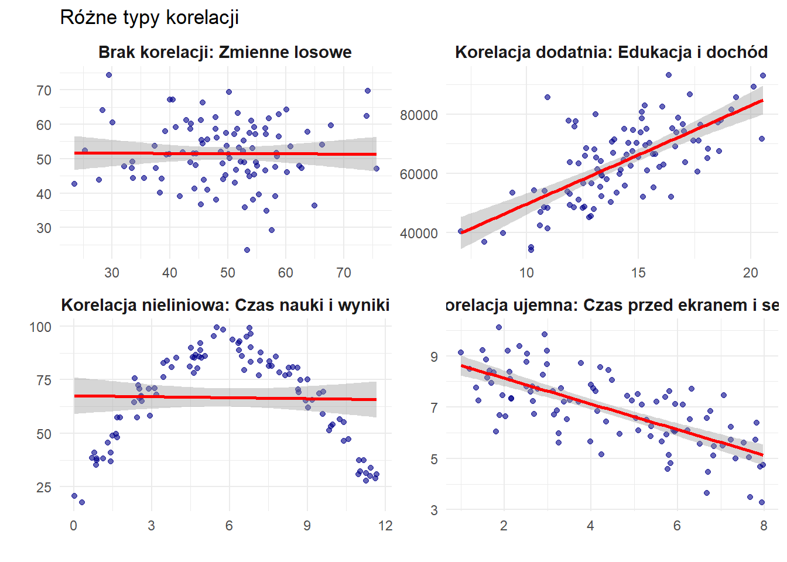
W przypadku zależności nieliniowej model liniowy jest nieodpowiedni. Model kwadratowy lepiej odzwierciedla rzeczywistą zależność:
ggplot(nonlinear_data, aes(x = x, y = y)) +geom_point(alpha =0.6, color ="darkblue") +geom_smooth(method ="lm", color ="red", linetype ="dashed", se =FALSE) +geom_smooth(method ="lm", formula = y ~ x +I(x^2), color ="green", se =TRUE) +labs(title ="Korelacja nieliniowa: Czas nauki a wyniki testów",subtitle ="Model liniowy (czerwony) vs. Model kwadratowy (zielony)",x ="Godziny nauki",y ="Wynik testu" ) +theme_minimal()
`geom_smooth()` using formula = 'y ~ x'
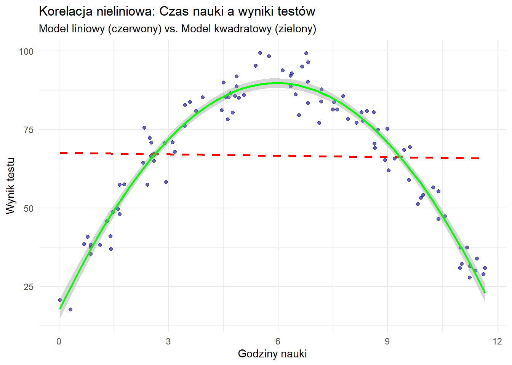
16.2 Analiza Regresji - wprowadzenie
Analiza regresji stanowi metodologię modelowania zależności między zmienną objaśnianą a jedną lub wieloma zmiennymi objaśniającymi. Metoda najmniejszych kwadratów (OLS - Ordinary Least Squares) minimalizuje sumę kwadratów reszt w celu znalezienia najlepiej dopasowanej linii trendu.
16.2.1 Model Regresji Liniowej
Prosty model regresji liniowej można wyrazić jako:
Y_i = \beta_0 + \beta_1 X_i + \varepsilon_i
Gdzie:
Y_i to zmienna objaśniana dla obserwacji i
X_i to zmienna objaśniająca dla obserwacji i
\beta_0 to wyraz wolny (intercept)
\beta_1 to współczynnik kierunkowy (slope coefficient)
\varepsilon_i to składnik losowy (error term, residuals)
Regresja wieloraka rozszerza ten model o większą liczbę predyktorów:
16.2.2 Intuicyjne Zrozumienie “Najlepszego Dopasowania” (“Best Fit”) Modelu do Danych w Regresji OLS (Ordinary Least Squares)
16.2.2.1 Co właściwie oznacza “najlepsze dopasowanie”?
W analizie regresji chcemy znaleźć linię, która najlepiej reprezentuje związek między naszymi zmiennymi. Ale co sprawia, że linia jest “najlepsza”?
Wyobraź sobie wykres rozrzutu punktów danych. Istnieje nieskończenie wiele linii, które można poprowadzić przez te punkty. Linia najlepszego dopasowania (line of best fit) to ta, która minimalizuje całkowitą odległość między linią a wszystkimi punktami danych.
16.2.2.2 Dlaczego używamy sumy kwadratów błędów (SSE - Sum of Squared Errors)?
Metoda OLS definiuje “najlepsze dopasowanie” jako linię, która minimalizuje sumę kwadratów błędów:
\hat{Y}_i to wartość przewidywana z naszej linii regresji
\varepsilon_i to reszta (błąd) dla każdej obserwacji
Ale dlaczego podnosimy błędy do kwadratu? Istnieją cztery główne powody:
Równe traktowanie błędów dodatnich i ujemnych: Przez podnoszenie do kwadratu zapewniamy, że punkty powyżej i poniżej linii w równym stopniu przyczyniają się do naszej miary dopasowania.
Unikanie wzajemnego znoszenia się błędów: Jeśli użylibyśmy zwykłej sumy błędów \sum (Y_i - \hat{Y}_i), otrzymalibyśmy zawsze wartość zero dla linii regresji OLS, ponieważ dodatnie i ujemne odchylenia wzajemnie się znoszą. Faktycznie, można matematycznie udowodnić, że dla linii regresji OLS suma reszt zawsze wynosi zero: \sum \varepsilon_i = 0. Podnoszenie do kwadratu zapobiega temu efektowi.
Większa kara za duże błędy: Podnoszenie do kwadratu nadaje większą wagę dużym błędom, sprawiając, że linia jest bardziej wrażliwa na wartości odstające.
Zalety matematyczne: Kwadratowa funkcja celu ma szereg zalet matematycznych:
Tworzy funkcję wypukłą (convex function) z pojedynczym globalnym minimum
Pochodna funkcji kwadratowej jest liniowa, co prowadzi do rozwiązań w postaci jawnej (closed-form solutions)
Pozwala to na bezpośrednie analityczne wyprowadzenie współczynników regresji
Inne miary błędów (jak np. suma wartości bezwzględnych odchyleń) nie mają takich właściwości i często wymagają metod iteracyjnych do znalezienia rozwiązania
Ta wizualizacja pokazuje, jak metoda najmniejszych kwadratów minimalizuje kwadraty długości zielonych linii (reszt). Linia czerwona została tak dobrana, że suma kwadratów tych odchyleń jest najmniejsza ze wszystkich możliwych linii prostych.
16.2.3 Koncepcja Sumy Kwadratów Błędów (SSE)
Suma kwadratów błędów (SSE) jest fundamentalnym konceptem w regresji liniowej metodą najmniejszych kwadratów (OLS). Aby lepiej zrozumieć tę koncepcję:
Reszty: Każdy błąd (reszta, \varepsilon_i) to pionowa odległość między punktem danych a linią regresji
Kwadraty błędów: Podnosimy każdą resztę do kwadratu, co:
Eliminuje problem znaków (dodatnie i ujemne błędy nie znoszą się wzajemnie)
Penalizuje większe błędy bardziej niż mniejsze (błąd 2 razy większy ma 4 razy większy wpływ)
Suma: Sumujemy wszystkie kwadraty błędów, otrzymując miarę dopasowania modelu
Minimalizacja: Linia regresji OLS jest tą, która minimalizuje tę sumę
16.2.4 Wizualizacja Sumy Kwadratów Błędów w Regresji Liniowej
Aby zrozumieć tę koncepcję wizualnie:
Wyobraź sobie każdy błąd jako pionową linię od punktu danych do linii regresji
Każda z tych linii reprezentuje resztę (rezyduum, \varepsilon_i)
Podnosimy do kwadratu każdą resztę (tworząc kwadratową powierzchnię)
Suma wszystkich tych kwadratowych powierzchni to właśnie to, co staramy się zminimalizować
# Load required librarieslibrary(ggplot2)library(ggrepel) # For better label placement# Create sample dataset.seed(123)x <-1:20y <-2+3*x +rnorm(20, 0, 5)data <-data.frame(x = x, y = y)# Fit regression modelmodel <-lm(y ~ x, data = data)coef <-coefficients(model)preds <-predict(model)# Calculate residualsdata$predicted <- predsdata$residuals <- y - preds# Select only a few points to label (to reduce clutter)points_to_label <-c(5, 15)# Create plotggplot(data, aes(x = x, y = y)) +# Add light gray grid for better referencetheme_minimal() +theme(panel.grid.minor =element_line(color ="gray90"),panel.grid.major =element_line(color ="gray85") ) +# Add regression linegeom_abline(intercept = coef[1], slope = coef[2], color ="blue", size =1.2) +# Add residual lines with higher visibilitygeom_segment(aes(xend = x, yend = predicted), color ="red", size =0.9) +# Add squared error visualization - clearer squaresgeom_rect(aes(xmin = x -abs(residuals)/2, xmax = x +abs(residuals)/2, ymin = predicted, ymax = predicted +sign(residuals) *abs(residuals)),fill ="tomato", alpha =0.3, color ="red", size =0.5) +# Add data points on topgeom_point(size =3, fill ="black", shape =21, color ="white") +# Add labels for selected residuals with better visibilitygeom_text_repel(data = data[points_to_label, ], aes(label =paste("ε =", round(residuals, 1))),size =4.5,bg.color ="white",bg.r =0.15,box.padding =0.5,point.padding =0.5,force =10,color ="darkred",min.segment.length =0 ) +# Add annotation for squared errors with better visibilitygeom_text_repel(data = data[points_to_label, ], aes(x = x, y = predicted +sign(residuals) *abs(residuals)/2, label =paste("ε² =", round(residuals^2, 1))),size =4.5,bg.color ="white",bg.r =0.15,color ="darkred",box.padding =0.5,force =5 ) +# Add prominent SSE annotation with boxannotate("rect", xmin =max(x) -7, xmax =max(x), ymin =min(y) +3, ymax =min(y) +7,fill ="lightyellow", color ="gray50", alpha =0.7) +annotate("text", x =max(x) -3.5, y =min(y) +5, label =paste("Suma SSE =", round(sum(data$residuals^2), 1)),size =5, color ="darkred", fontface ="bold") +# Improved titleslabs(title ="Wizualizacja Sumy Kwadratów Błędów",subtitle ="Czerwone kwadraty reprezentują kwadraty błędów (powierzchnia = ε²)",x ="X", y ="Y") +theme(plot.title =element_text(face ="bold", size =16),plot.subtitle =element_text(size =12),axis.title =element_text(size =12, face ="bold"),axis.text =element_text(size =11) )
Warning: Using `size` aesthetic for lines was deprecated in ggplot2 3.4.0.
ℹ Please use `linewidth` instead.
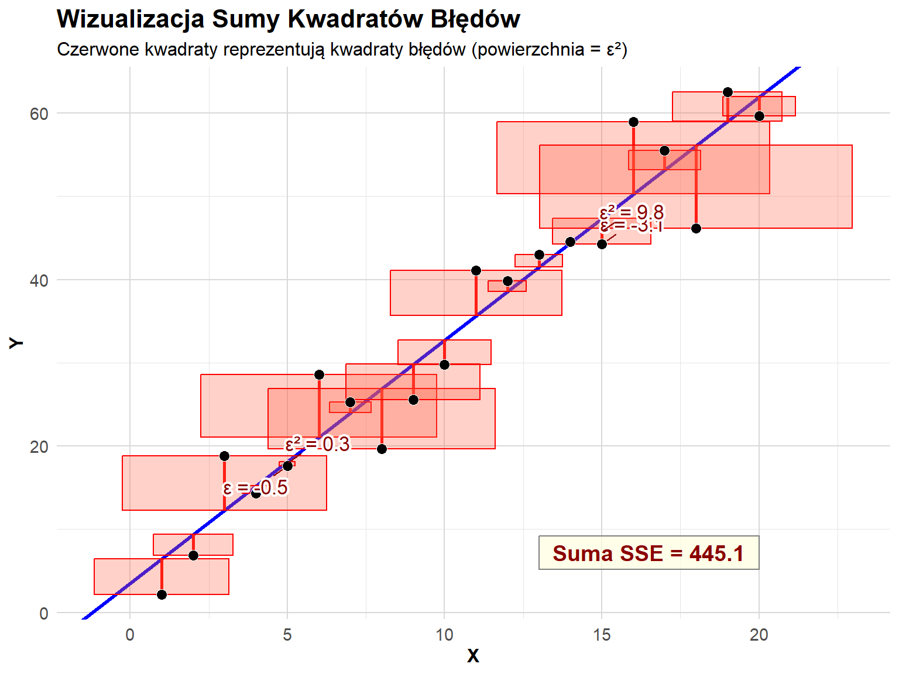
Wizualizacja Sumy Kwadratów Błędów
16.2.5 Wizualizacja OLS Poprzez Różne Linie
Prosty, ale skuteczny sposób wizualizacji koncepcji “najlepszego dopasowania” to porównanie wielu linii i wynikających z nich wartości SSE:
The following object is masked from 'package:dplyr':
combine
# Create sample dataset.seed(123)x <-1:20y <-2+3*x +rnorm(20, 0, 5)data <-data.frame(x = x, y = y)# Fit regression modelmodel <-lm(y ~ x, data = data)coef <-coefficients(model)# Define different lines: optimal and sub-optimal with clearer differenceslines <-data.frame(label =c("Najlepsze Dopasowanie (OLS)", "Linia A", "Linia B", "Linia C"),intercept =c(coef[1], coef[1] -8, coef[1] +8, coef[1] -4),slope =c(coef[2], coef[2] -1.2, coef[2] +0.8, coef[2] -0.7))# Calculate SSE for each linelines$sse <-sapply(1:nrow(lines), function(i) { predicted <- lines$intercept[i] + lines$slope[i] * xsum((y - predicted)^2)})# Add percentage increase over optimal SSElines$pct_increase <-round((lines$sse / lines$sse[1] -1) *100, 1)lines$pct_text <-ifelse(lines$label =="Najlepsze Dopasowanie (OLS)", "Optymalne", paste0("+", lines$pct_increase, "%"))# Assign distinct colors for better visibilityline_colors <-c("Najlepsze Dopasowanie (OLS)"="blue", "Linia A"="red", "Linia B"="darkgreen", "Linia C"="purple")# Create data for mini residual plotsmini_data <-data.frame()for(i in1:nrow(lines)) { line_data <-data.frame(x = x,y = y,predicted = lines$intercept[i] + lines$slope[i] * x,residuals = y - (lines$intercept[i] + lines$slope[i] * x),line = lines$label[i] ) mini_data <-rbind(mini_data, line_data)}# Create main comparison plot with improved visibilityp1 <-ggplot(data, aes(x = x, y = y)) +# Add background grid for referencetheme_minimal() +theme(panel.grid.minor =element_line(color ="gray90"),panel.grid.major =element_line(color ="gray85"),plot.title =element_text(size =16, face ="bold"),plot.subtitle =element_text(size =13),axis.title =element_text(size =13, face ="bold"),axis.text =element_text(size =12) ) +# Add data pointsgeom_point(size =2.5, alpha =0.8) +# Add lines with improved visibilitygeom_abline(data = lines, aes(intercept = intercept, slope = slope, color = label, linetype = label =="Najlepsze Dopasowanie (OLS)"),size =1.2) +# Use custom colorsscale_color_manual(values = line_colors) +scale_linetype_manual(values =c("TRUE"="solid", "FALSE"="dashed"), guide ="none") +# Better legendslabs(title ="Porównanie Różnych Linii Regresji",subtitle ="Linia OLS minimalizuje sumę kwadratów błędów",x ="X", y ="Y",color ="Linia Regresji") +guides(color =guide_legend(override.aes =list(size =2)))# Create mini residual plots with improved visibilityp_mini <-list()for(i in1:nrow(lines)) { line_data <-subset(mini_data, line == lines$label[i]) p_mini[[i]] <-ggplot(line_data, aes(x = x, y = residuals)) +# Add reference linegeom_hline(yintercept =0, linetype ="dashed", size =0.8, color ="gray50") +# Add residual points with line colorgeom_point(color = line_colors[lines$label[i]], size =2.5) +# Add squares to represent squared errorsgeom_rect(aes(xmin = x -0.3, xmax = x +0.3,ymin =0, ymax = residuals),fill = line_colors[lines$label[i]], alpha =0.2) +# Improved titleslabs(title = lines$label[i],subtitle =paste("SSE =", round(lines$sse[i], 1), ifelse(i ==1, " (Optymalne)", paste0(" (+", lines$pct_increase[i], "%)"))),x =NULL, y =NULL) +theme_minimal() +theme(plot.title =element_text(size =12, face ="bold", color = line_colors[lines$label[i]]),plot.subtitle =element_text(size =10),panel.grid.minor =element_blank() )}# Create SSE comparison table with better visibilitysse_df <-data.frame(x =rep(1, nrow(lines)),y =nrow(lines):1,label =paste0(lines$label, ": SSE = ", round(lines$sse, 1), " (", lines$pct_text, ")"),color = line_colors[lines$label])sse_table <-ggplot(sse_df, aes(x = x, y = y, label = label, color = color)) +geom_text(hjust =0, size =5, fontface ="bold") +scale_color_identity() +theme_void() +xlim(1, 10) +ylim(0.5, nrow(lines) +0.5) +labs(title ="Porównanie Sumy Kwadratów Błędów (SSE)") +theme(plot.title =element_text(hjust =0, face ="bold", size =14))# Arrange the plots with better spacinggrid.arrange( p1, arrangeGrob(p_mini[[1]], p_mini[[2]], p_mini[[3]], p_mini[[4]], ncol =2, padding =unit(1, "cm")), sse_table, ncol =1, heights =c(4, 3, 1))
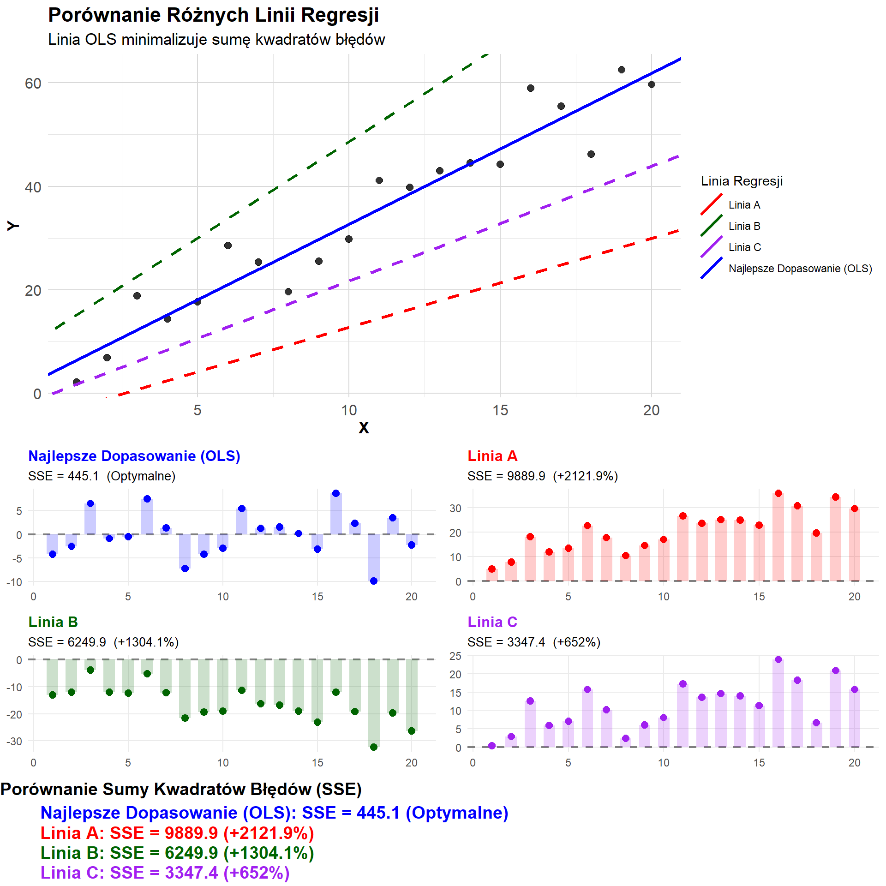
Porównanie różnych linii regresji
16.2.6 Ulepszona Wizualizacja Kwadratów Reszt
Ta wizualizacja wyraźnie pokazuje, jak kwadraty reszt przyczyniają się do SSE:
# Load required librarieslibrary(ggplot2)library(ggrepel)library(grid)library(gridExtra)# Calculate residuals for OLS linedata$predicted <-predict(model)data$residuals <-residuals(model)# Create classification for residual sizesdata$res_category <-cut(abs(data$residuals), breaks =quantile(abs(data$residuals), probs =seq(0, 1, 0.25)), labels =c("Małe", "Średnie", "Duże", "Bardzo duże"),include.lowest =TRUE)# Create better color palette for residual categoriesres_colors <-c("Małe"="#FEE5D9", "Średnie"="#FCAE91", "Duże"="#FB6A4A", "Bardzo duże"="#CB181D")# Create SSE contribution informationcontribution_data <-data.frame(Category =c("Małe", "Średnie", "Duże", "Bardzo duże"),Contribution =c(round(sum(data$residuals[data$res_category =="Małe"]^2) /sum(data$residuals^2) *100, 1),round(sum(data$residuals[data$res_category =="Średnie"]^2) /sum(data$residuals^2) *100, 1),round(sum(data$residuals[data$res_category =="Duże"]^2) /sum(data$residuals^2) *100, 1),round(sum(data$residuals[data$res_category =="Bardzo duże"]^2) /sum(data$residuals^2) *100, 1) ))# Select fewer points to label to reduce overlappoints_to_label <-c(3, 12, 18)# Create main plot with enhanced visibilitymain_plot <-ggplot(data, aes(x = x, y = y)) +# Add light grid for better referencetheme_minimal() +theme(panel.grid.minor =element_line(color ="gray90"),panel.grid.major =element_line(color ="gray85"),legend.position ="top",legend.box ="horizontal",plot.title =element_text(size =16, face ="bold"),plot.subtitle =element_text(size =13),axis.title =element_text(size =13, face ="bold"),axis.text =element_text(size =12),legend.title =element_text(size =12, face ="bold"),legend.text =element_text(size =11) ) +# Add regression line first (bottom layer)geom_abline(intercept = coef[1], slope = coef[2], color ="blue", size =1.2) +# Add residual lines with better visibilitygeom_segment(aes(xend = x, yend = predicted, color = res_category), size =1, alpha =0.8) +# Create actual squares with outlines for better visibilitygeom_rect(aes(xmin = x -abs(residuals)/2, xmax = x +abs(residuals)/2,ymin = predicted -abs(residuals)/2, ymax = predicted +abs(residuals)/2,fill = res_category),color ="gray30", size =0.3, alpha =0.6) +# Add original data points on topgeom_point(size =3, shape =21, fill ="black", color ="white") +# Enhanced labels with more separation and better repulsion parametersgeom_label_repel(data = data[points_to_label, ],aes(label =paste0("ε = ", round(residuals, 1), "\nε² = ", round(residuals^2, 1))),size =4,box.padding =0.8, # Increased padding for better separationpoint.padding =0.7, # Increased point paddingmin.segment.length =0.2, # Force segmentsforce =15, # Increased repulsion forcedirection ="both", # Allow repulsion in all directionsfill ="white",color ="black",segment.color ="gray50" ) +# Better color scalesscale_color_manual(values = res_colors) +scale_fill_manual(values = res_colors) +# Better titles and labelslabs(title ="Wizualizacja Sumy Kwadratów Błędów (SSE)",subtitle ="Powierzchnie kwadratów reprezentują kwadraty reszt (powierzchnia = ε²)",x ="X", y ="Y",color ="Wielkość Reszty",fill ="Wielkość Reszty")# Create separate plot for SSE values and contributionsse_value <-sum(data$residuals^2)# Create a formatted table for contribution datasse_table <-tableGrob( contribution_data,rows =NULL,cols =c("Kategoria Reszt", "Udział (%)"),theme =ttheme_minimal(base_size =11,core =list(fg_params =list(fontface =c(rep("plain", 4), "bold")),bg_params =list(fill =c(res_colors, "white"))),colhead =list(fg_params =list(fontface ="bold")) ))# Add sum row at the bottom of the tablesum_row <-tableGrob(data.frame(Category ="SUMA", Contribution ="100.0"),rows =NULL,cols =c("", ""),theme =ttheme_minimal(base_size =11,core =list(fg_params =list(fontface ="bold")),colhead =list(fg_params =list(fontface ="bold")) ))# Combine contribution table and sum rowcombined_table <- gtable:::rbind_gtable(sse_table, sum_row, "first")# Create title for the tablesse_title <-textGrob(paste("Suma Kwadratów Błędów =", round(sse_value, 2)),gp =gpar(fontface ="bold", fontsize =14, col ="darkred"),hjust =0)# Combine title and tablesse_grob <-arrangeGrob( sse_title, combined_table,ncol =1,heights =c(0.2, 0.8))# Combine main plot and SSE table into one compositionfinal_plot <-grid.arrange( main_plot, sse_grob,ncol =1,heights =c(0.8, 0.2))
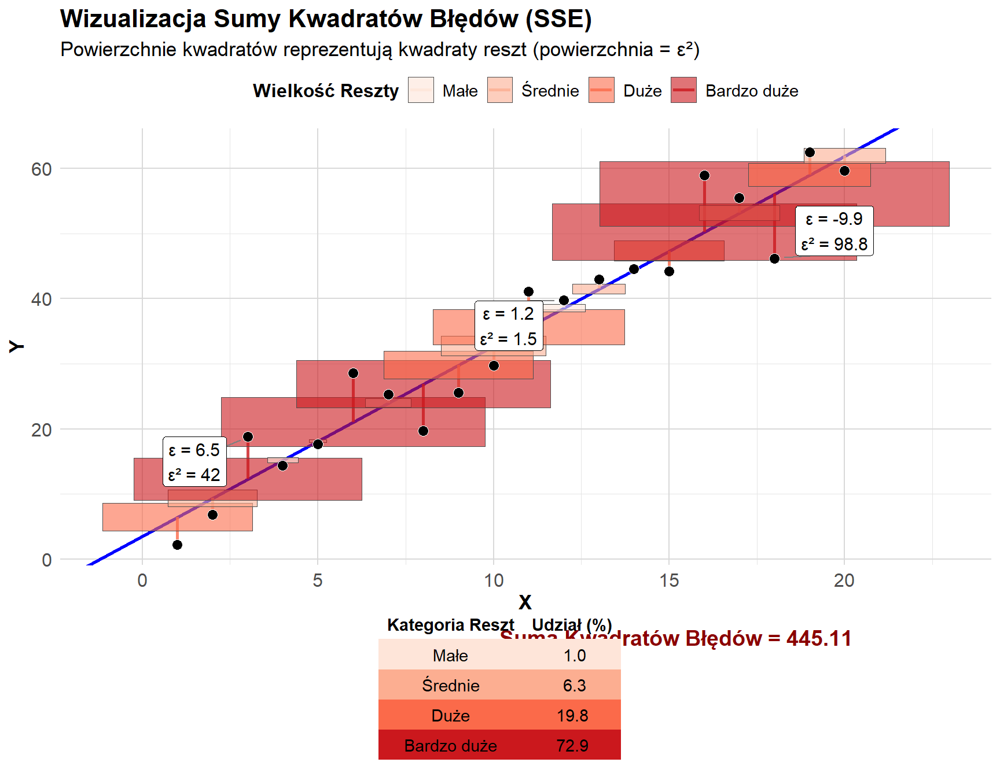
Wizualizacja kwadratów reszt
16.2.7 Kluczowe Punkty Do Zapamiętania
Suma Kwadratów Błędów (SSE) to właśnie to, co minimalizuje regresja metodą Najmniejszych Kwadratów (OLS)
Każda reszta przyczynia się swoją wartością podniesioną do kwadratu do całkowitej SSE
Linia OLS ma niższą wartość SSE niż każda inna możliwa linia
Duże reszty nieproporcjonalnie mocno wpływają na SSE z powodu operacji podnoszenia do kwadratu
Dlatego wartości odstające mogą mieć tak silny wpływ na linie regresji
16.2.8 Alternatywna Wizualizacja SSE: Pionowe Odległości
Ta wizualizacja pokazuje tradycyjne podejście do SSE, gdzie błędy są reprezentowane jako pionowe odległości od punktów do linii regresji:
# Tworzenie przykładowych danychset.seed(123)x <-1:20y <-2+3*x +rnorm(20, 0, 5)data <-data.frame(x = x, y = y)# Dopasowanie modelu regresjimodel <-lm(y ~ x, data = data)coef <-coefficients(model)data$predicted <-predict(model)data$residuals <-residuals(model)# Tworzenie wykresu z lepszym formatowaniemggplot(data, aes(x = x, y = y)) +# Siatka pomocnicza dla lepszej czytelnościgeom_hline(yintercept =seq(0, 80, by =10), color ="gray90") +geom_vline(xintercept =seq(0, 20, by =5), color ="gray90") +# Punkty danych z lepszym kontrastemgeom_point(size =3, color ="darkblue", alpha =0.7) +# Linia regresji z opisemgeom_abline(intercept = coef[1], slope = coef[2], color ="forestgreen", size =1.2) +# Linie resztgeom_segment(aes(xend = x, yend = predicted, color =abs(residuals)), linewidth =1) +# Prostokąty reprezentujące obszar reszt (nie kwadraty!)geom_rect(aes(xmin = x -0.2, xmax = x +0.2, ymin =pmin(y, predicted), ymax =pmax(y, predicted),fill =abs(residuals)),alpha =0.4) +# Skala kolorów dla resztscale_color_gradient(name ="Wielkość błędu", low ="yellow", high ="red") +scale_fill_gradient(name ="Wielkość błędu", low ="yellow", high ="red") +# Lepsza anotacja i etykietylabs(title ="Wizualizacja Pionowych Odległości (Reszt)",subtitle ="Czerwone obszary pokazują wielkość błędów, które po podniesieniu do kwadratu sumujemy w SSE",x ="Zmienna niezależna (X)",y ="Zmienna zależna (Y)") +annotate("text", x =15, y =20, label =paste("Równanie: y =", round(coef[1], 2), "+", round(coef[2], 2), "* x"),color ="forestgreen", size =4, fontface ="bold") +theme_minimal(base_size =12) +theme(plot.title =element_text(face ="bold"),plot.subtitle =element_text(color ="gray30"),legend.position ="right")
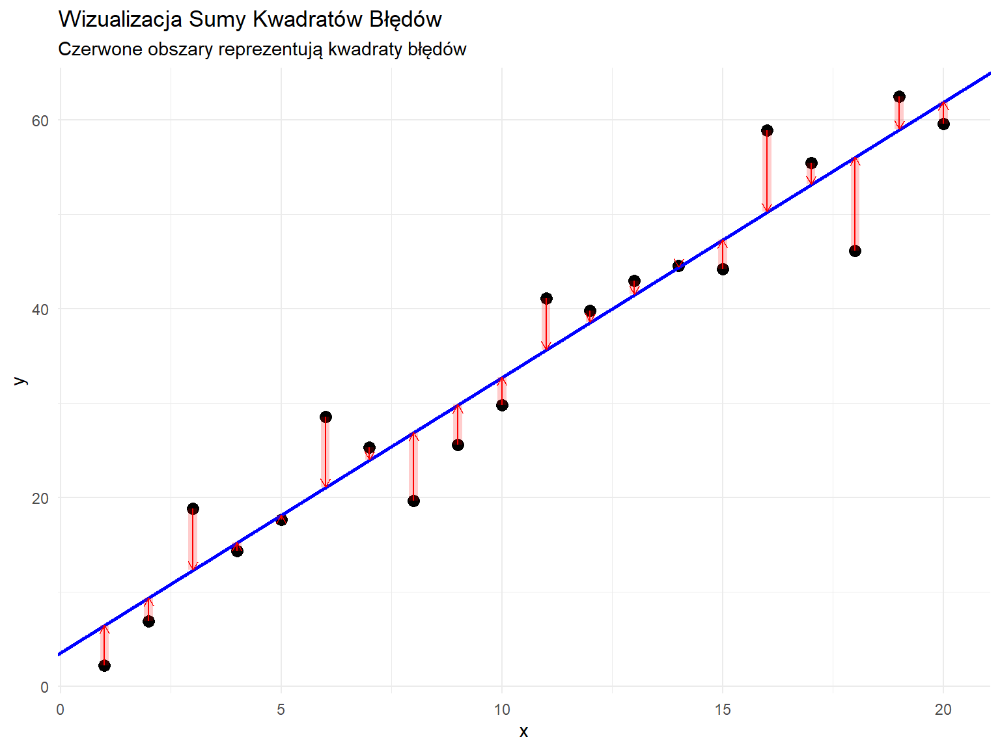
Wizualizacja pionowych odległości
16.2.8.1 Krok po Kroku Minimalizacja SSE
Aby zilustrować proces znajdowania minimum SSE, możemy stworzyć sekwencję przechodzącą przez punkt optymalny, pokazując jak SSE najpierw zmniejsza się do minimum, a następnie znów rośnie:
# Tworzenie przykładowych danychset.seed(123)x <-1:20y <-2+3*x +rnorm(20, 0, 5)data <-data.frame(x = x, y = y)# Dopasowanie modelu regresjimodel <-lm(y ~ x, data = data)coef <-coefficients(model)# Stworzenie sekwencji kroków przechodzącej przez optymalną linię OLSsteps <-9# Użyj nieparzystej liczby, aby mieć środkowy punkt w optimumstep_seq <-data.frame(step =1:steps,intercept =seq(coef[1] -8, coef[1] +8, length.out = steps),slope =seq(coef[2] -1.5, coef[2] +1.5, length.out = steps))# Oznaczenie środkowego kroku (optymalne rozwiązanie OLS)optimal_step <-ceiling(steps/2)# Obliczenie SSE dla każdego krokustep_seq$sse <-sapply(1:nrow(step_seq), function(i) { predicted <- step_seq$intercept[i] + step_seq$slope[i] * xsum((y - predicted)^2)})# Stworzenie wykresu "podróży przez dolinę SSE"p2 <-ggplot(data, aes(x = x, y = y)) +geom_point(size =2, alpha =0.7) +geom_abline(data = step_seq, aes(intercept = intercept, slope = slope, color = sse, group = step),size =1) +# Podświetlenie optymalnej liniigeom_abline(intercept = step_seq$intercept[optimal_step], slope = step_seq$slope[optimal_step],color ="green", size =1.5) +scale_color_gradient(low ="blue", high ="red") +labs(title ="Podróż Przez Dolinę SSE",subtitle ="Zielona linia reprezentuje rozwiązanie OLS z minimalnym SSE",color ="Wartość SSE") +theme_minimal()# Stworzenie wykresu doliny SSEp3 <-ggplot(step_seq, aes(x = step, y = sse)) +geom_line(size =1) +geom_point(size =3, aes(color = sse)) +scale_color_gradient(low ="blue", high ="red") +# Podświetlenie optymalnego punktugeom_point(data = step_seq[optimal_step, ], aes(x = step, y = sse), size =5, color ="green") +# Dodanie adnotacjiannotate("text", x = optimal_step, y = step_seq$sse[optimal_step] *1.1, label ="Minimum SSE", color ="darkgreen", fontface ="bold") +labs(title ="Dolina SSE: Zmniejszenie, a Następnie Zwiększenie",subtitle ="SSE osiąga minimum w rozwiązaniu OLS",x ="Krok",y ="Suma Kwadratów Błędów") +theme_minimal() +theme(legend.position ="none")# Wyświetlenie obu wykresówgrid.arrange(p2, p3, ncol =1, heights =c(3, 2))
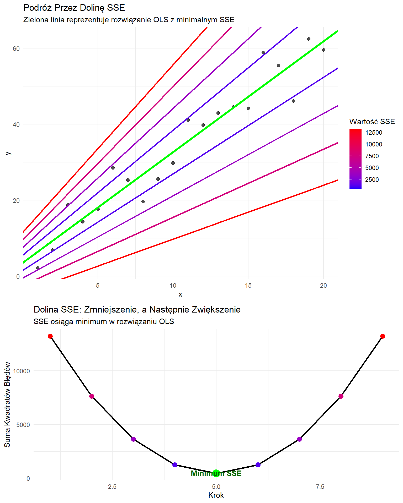
Wizualizacja minimalizacji SSE
16.2.9 Estymator OLS
Estymator OLS dla współczynników minimalizuje:
\sum_{i=1}^{n} (Y_i - \hat{Y}_i)^2
Gdzie \hat{Y}_i to przewidywana wartość dla obserwacji i.
Aby OLS dawał nieobciążone estymatory, musi być spełnionych kilka założeń:
Liniowość (Linearity): Zależność między X i Y jest liniowa
Niezależność (Independence): Obserwacje są niezależne od siebie
Homoskedastyczność (Homoscedasticity): Wariancja błędu jest stała dla wszystkich poziomów X
Normalność (Normality): Błędy mają rozkład normalny
Brak multikolinearności (No multicollinearity): Predyktory nie są doskonale skorelowane
Egzogeniczność (Exogeneity): Składnik losowy nie jest skorelowany z predyktorami
Ostatnie założenie jest szczególnie ważne dla naszej dyskusji o pozornych korelacjach. Naruszenia założenia egzogeniczności prowadzą do problemów endogeniczności, które omówimy później.
W R funkcja lm() dopasowuje modele regresji liniowej:
model <-lm(y ~ x, data = ramka_danych)
16.2.10 Interpretacja Modelu: Przewodnik dla Początkujących
Stwórzmy prosty zbiór danych, aby lepiej zrozumieć wyniki regresji. Wyobraźmy sobie, że badamy, jak lata edukacji wpływają na miesięczne dochody:
# Tworzenie prostego zbioru danych - to nasz Proces Generujący Dane (DGP)set.seed(123) # Dla powtarzalnościlata_edukacji <-10:20# Edukacja od 10 do 20 latn <-length(lata_edukacji)# Prawdziwe parametry w naszym modelu - używamy realistycznych wartości dla Polskiprawdziwy_wyraz_wolny <-3000# Bazowy miesięczny dochód bez edukacji (w PLN)prawdziwe_nachylenie <-250# Każdy rok edukacji zwiększa miesięczny dochód o 250 PLN# Generowanie miesięcznych dochodów z losowym szumemdochod <- prawdziwy_wyraz_wolny + prawdziwe_nachylenie * lata_edukacji +rnorm(n, mean=0, sd=300)# Utworzenie naszego zbioru danychedukacja_dochod <-data.frame(edukacja = lata_edukacji,dochod = dochod)# Wizualizacja danychlibrary(ggplot2)ggplot(edukacja_dochod, aes(x = edukacja, y = dochod)) +geom_point(size =3, color ="blue") +geom_smooth(method ="lm", color ="red", se =TRUE) +scale_y_continuous(limits =c(5000, 8500), breaks =seq(5000, 8500, by =500),labels = scales::comma) +scale_x_continuous(breaks =10:20) +labs(title ="Zależność między wykształceniem a dochodem w Polsce",x ="Lata edukacji",y ="Miesięczny dochód (PLN)",subtitle ="Czerwona linia pokazuje oszacowaną zależność liniową" ) +theme_minimal(base_size =12) +theme(panel.grid.minor =element_blank(),plot.title =element_text(face ="bold"),axis.title =element_text(face ="bold") ) +annotate("text", x =11, y =8000, label ="Każdy punkt reprezentuje\ndane jednej osoby", hjust =0, size =4)
`geom_smooth()` using formula = 'y ~ x'
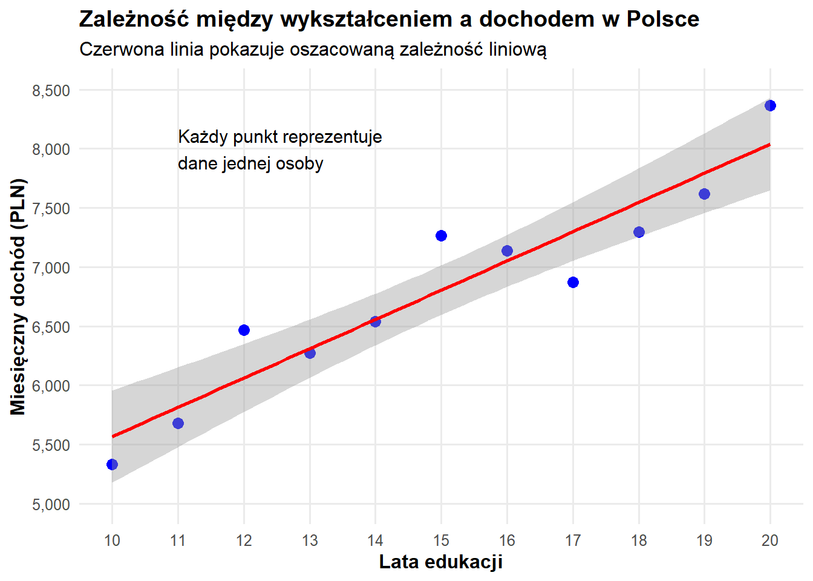
16.2.10.1 Dopasowanie Modelu
Teraz dopasujmy model regresji liniowej do tych danych:
# Dopasowanie prostego modelu regresjimodel_edu_dochod <-lm(dochod ~ edukacja, data = edukacja_dochod)# Wyświetlenie wynikówpodsumowanie_modelu <-summary(model_edu_dochod)podsumowanie_modelu
Call:
lm(formula = dochod ~ edukacja, data = edukacja_dochod)
Residuals:
Min 1Q Median 3Q Max
-427.72 -206.04 -38.12 207.32 460.78
Coefficients:
Estimate Std. Error t value Pr(>|t|)
(Intercept) 3095.3 447.6 6.915 6.95e-05 ***
edukacja 247.2 29.2 8.467 1.40e-05 ***
---
Signif. codes: 0 '***' 0.001 '**' 0.01 '*' 0.05 '.' 0.1 ' ' 1
Residual standard error: 306.3 on 9 degrees of freedom
Multiple R-squared: 0.8885, Adjusted R-squared: 0.8761
F-statistic: 71.69 on 1 and 9 DF, p-value: 1.403e-05
16.2.10.2 Zrozumienie Wyników Regresji Krok po Kroku
Przeanalizujmy, co oznacza każda część tego wyniku w prostych słowach:
16.2.10.2.1 1. Formuła
Na górze widać dochod ~ edukacja, co oznacza, że przewidujemy dochód na podstawie edukacji.
16.2.10.2.2 2. Reszty
Pokazują, jak daleko nasze przewidywania są od rzeczywistych wartości. Idealnie powinny być skupione wokół zera.
16.2.10.2.3 3. Tabela Współczynników
Oszacowania współczynników
Wartość
Błąd standardowy
Wartość t
Wartość p
(Intercept)
3095.27
447.63
6.91
0
edukacja
247.23
29.20
8.47
0
Wyraz wolny (\beta_0):
Wartość: Około 3095
Interpretacja: To przewidywany miesięczny dochód dla kogoś z 0 latami edukacji
Uwaga: Czasami wyraz wolny nie ma sensownej interpretacji w rzeczywistym świecie, szczególnie jeśli x=0 jest poza zakresem danych
Edukacja (\beta_1):
Wartość: Około 247
Interpretacja: Za każdy dodatkowy rok edukacji spodziewamy się, że miesięczny dochód wzrośnie o tę kwotę w PLN
To nasz główny współczynnik zainteresowania!
Błąd standardowy (Standard Error):
Mierzy precyzję naszych oszacowań
Mniejsze błędy standardowe oznaczają bardziej precyzyjne oszacowania
Można o tym myśleć jako o “plus minus ile” dla naszych współczynników
Wartość t (t value):
To współczynnik podzielony przez jego błąd standardowy
Mówi nam, o ile błędów standardowych nasz współczynnik jest oddalony od zera
Większe bezwzględne wartości t (powyżej 2) sugerują, że efekt jest statystycznie istotny
Wartość p (p-value):
Prawdopodobieństwo zaobserwowania naszego wyniku (lub czegoś bardziej ekstremalnego), jeśli w rzeczywistości nie byłoby zależności
Zazwyczaj p < 0,05 jest uważane za statystycznie istotne
Dla edukacji, p = 1.4e-05, co jest istotne!
16.2.10.2.4 4. Statystyki Dopasowania Modelu
Statystyki dopasowania modelu
Statystyka
Wartość
R-kwadrat
0.888
Skorygowany R-kwadrat
0.876
Statystyka F
71.686
Wartość p
0.000
R-kwadrat (R-squared):
Wartość: 0.888
Interpretacja: 89% zmienności dochodu jest wyjaśnione przez edukację
Wyższy jest lepszy, ale należy zachować ostrożność w przypadku bardzo wysokich wartości (może wskazywać na przeuczenie)
Statystyka F (F-statistic):
Testuje, czy model jako całość jest statystycznie istotny
Wysoka statystyka F z niską wartością p wskazuje na istotny model
16.2.10.3 Wizualizacja Wyników Modelu
Zwizualizujmy, co nasz model faktycznie nam mówi:
# Przewidywane wartościedukacja_dochod$przewidywane <-predict(model_edu_dochod)edukacja_dochod$reszty <-residuals(model_edu_dochod)# Stworzenie bardziej informatywnego wykresuggplot(edukacja_dochod, aes(x = edukacja, y = dochod)) +# Rzeczywiste punkty danychgeom_point(size =3, color ="blue") +# Linia regresjigeom_line(aes(y = przewidywane), color ="red", size =1.2) +# Linie resztgeom_segment(aes(xend = edukacja, yend = przewidywane), color ="darkgray", linetype ="dashed") +# Ustawienie odpowiednich skalscale_y_continuous(limits =c(5000, 8500), breaks =seq(5000, 8500, by =500),labels = scales::comma) +scale_x_continuous(breaks =10:20) +# Adnotacjeannotate("text", x =19, y =7850, label =paste("Nachylenie =", round(coef(model_edu_dochod)[2]), "PLN za rok"),color ="red", hjust =1, fontface ="bold") +annotate("text", x =10.5, y =5500, label =paste("Wyraz wolny =", round(coef(model_edu_dochod)[1]), "PLN"),color ="red", hjust =0, fontface ="bold") +annotate("text", x =14, y =8200, label =paste("R² =", round(podsumowanie_modelu$r.squared, 2)),color ="black", fontface ="bold") +# Etykietylabs(title ="Interpretacja Modelu Regresji Edukacja-Dochód",subtitle ="Czerwona linia pokazuje przewidywany dochód dla każdego poziomu edukacji",x ="Lata edukacji",y ="Miesięczny dochód (PLN)",caption ="Szare przerywane linie reprezentują reszty (błędy przewidywania)" ) +theme_minimal(base_size =12) +theme(panel.grid.minor =element_blank(),plot.title =element_text(face ="bold"),axis.title =element_text(face ="bold") )
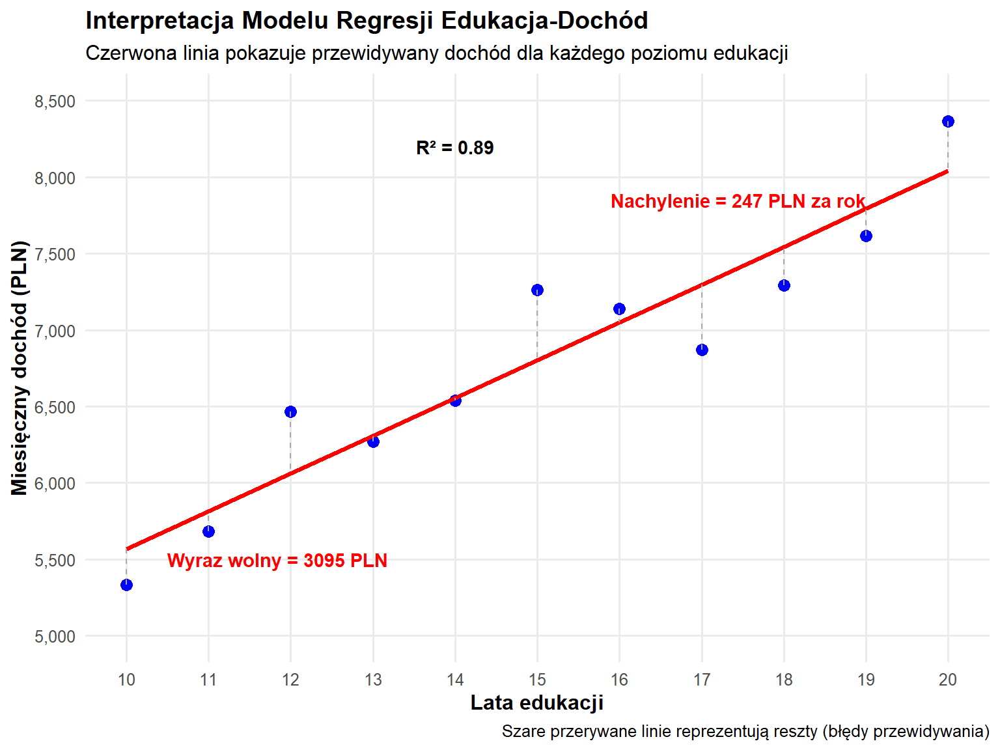
16.2.10.4 Interpretacja w Kontekście Rzeczywistym
Osoba z 16 latami edukacji (absolwent studiów) według naszego modelu zarabiałaby około: \hat{Y} = 3095 + 247 \times 16 = 7051 \text{ PLN miesięcznie}
Model sugeruje, że każdy dodatkowy rok edukacji wiąże się ze wzrostem miesięcznego dochodu o 247 PLN.
Nasz model wyjaśnia około 89% zmienności dochodu w naszej próbie.
Zależność jest statystycznie istotna (p < 0,001), co oznacza, że bardzo mało prawdopodobne jest zaobserwowanie takiej zależności, jeśli edukacja naprawdę nie miałaby wpływu na dochód.
16.2.10.5 Ważne Przestrogi dla Początkujących
Korelacja ≠ Przyczynowość (Correlation ≠ Causation): Nasz model pokazuje związek, niekoniecznie przyczynowość
Pominięte Zmienne (Omitted Variables): Inne czynniki mogą wpływać zarówno na edukację, jak i dochód
Ekstrapolacja (Extrapolation): Należy zachować ostrożność przy przewidywaniu poza zakresem danych
Zależność Liniowa (Linear Relationship): Założyliśmy, że zależność jest liniowa, co nie zawsze musi być prawdą
16.2.10.6 Następne Kroki w Analizie
Sprawdzenie założeń modelu (liniowość, normalność reszt itp.)
Rozważenie dodania większej liczby zmiennych (regresja wieloraka)
Wypróbowanie transformacji, jeśli zależności nie są liniowe
Zbadanie efektów interakcji
16.3 Korelacja pozorna: Przyczyny i przykłady
Korelacja pozorna (ang. spurious correlation) występuje, gdy zmienne wydają się być powiązane, ale związek ten nie ma charakteru przyczynowego. Te mylące korelacje wynikają z kilku źródeł:
Przypadkowa zbieżność (przypadek)
Zmienne zakłócające (ukryte czynniki trzecie)
Błędy selekcji
Niewłaściwa analiza statystyczna
Odwrócona przyczynowość
Problemy endogeniczności (w tym symultaniczność)
16.3.1 Przypadkowa Zbieżność (Przypadek)
Przy wystarczającej ilości analizowanych danych lub małych próbach badawczych, pozornie znaczące korelacje mogą pojawić się wyłącznie przez przypadek. Jest to szczególnie problematyczne, gdy badacze przeprowadzają wielokrotne analizy bez odpowiednich korekt dla wielokrotnych porównań, praktyka znana jako “p-hacking”.
# Stworzenie realistycznego przykładu pozornej korelacji opartej na rzeczywistych danych krajowych# Wykorzystanie danych o spożyciu czekolady i laureatach Nagrody Nobla# Przykład inspirowany opublikowaną korelacją (Messerli, 2012)set.seed(123)kraje <-c("Szwajcaria", "Szwecja", "Dania", "Belgia", "Austria", "Norwegia", "Niemcy", "Holandia", "Wielka Brytania", "Finlandia", "Francja", "Włochy", "Hiszpania", "Polska", "Grecja", "Portugalia")# Tworzenie realistycznych danych: Spożycie czekolady koreluje z PKB per capita# Kraje o wyższym PKB zazwyczaj konsumują więcej czekolady i mają lepsze finansowanie badańpkb_per_capita <-c(87097, 58977, 67218, 51096, 53879, 89154, 51860, 57534, 46510, 53982, 43659, 35551, 30416, 17841, 20192, 24567)# Normalizacja wartości PKB, aby były łatwiejsze w zarządzaniupkb_znormalizowane <- (pkb_per_capita -min(pkb_per_capita)) / (max(pkb_per_capita) -min(pkb_per_capita))# Bardziej realistyczne spożycie czekolady - luźno oparte na rzeczywistych wzorcach konsumpcji# plus pewna losowość, ale pod wpływem PKBspozycie_czekolady <-4+8* pkb_znormalizowane +rnorm(16, 0, 0.8)# Nagrody Nobla - również pod wpływem PKB (finansowanie badań) z szumem# Relacja jest nieliniowa, ale pokaże się jako skorelowananagrody_nobla <-2+12* pkb_znormalizowane^1.2+rnorm(16, 0, 1.5)# Tworzenie ramki danychdane_krajowe <-data.frame(kraj = kraje,czekolada =round(spozycie_czekolady, 1),nobel =round(nagrody_nobla, 1),pkb = pkb_per_capita)# Dopasowanie modelu regresji - czekolada vs nobel bez kontrolowania PKBmodel_czekolada_nobel <-lm(nobel ~ czekolada, data = dane_krajowe)# Lepszy model, który ujawnia zmienną zakłócającąpelny_model <-lm(nobel ~ czekolada + pkb, data = dane_krajowe)# Wykres pozornej relacjiggplot(dane_krajowe, aes(x = czekolada, y = nobel)) +geom_point(color ="darkblue", size =3, alpha =0.7) +geom_text(aes(label = kraj), hjust =-0.2, vjust =0, size =3) +geom_smooth(method ="lm", color ="red", se =TRUE) +labs(title ="Pozorna Korelacja: Spożycie Czekolady vs. Nagrody Nobla",subtitle ="Pokazuje jak zmienne zakłócające tworzą pozorne korelacje",x ="Spożycie Czekolady (kg na osobę)",y ="Nagrody Nobla na 10 mln Mieszkańców" ) +theme_minimal()
Call:
lm(formula = nobel ~ czekolada, data = dane_krajowe)
Residuals:
Min 1Q Median 3Q Max
-1.9080 -1.4228 0.0294 0.5962 3.2977
Coefficients:
Estimate Std. Error t value Pr(>|t|)
(Intercept) -4.0518 1.3633 -2.972 0.0101 *
czekolada 1.3322 0.1682 7.921 1.54e-06 ***
---
Signif. codes: 0 '***' 0.001 '**' 0.01 '*' 0.05 '.' 0.1 ' ' 1
Residual standard error: 1.626 on 14 degrees of freedom
Multiple R-squared: 0.8176, Adjusted R-squared: 0.8045
F-statistic: 62.75 on 1 and 14 DF, p-value: 1.536e-06
# Demonstracja problemu wielokrotnego testowaniawartosci_p <-numeric(100)for(i in1:100) {# Generowanie dwóch całkowicie losowych zmiennych z n=20 x <-rnorm(20) y <-rnorm(20)# Test korelacji i przechowywanie wartości p wartosci_p[i] <-cor.test(x, y)$p.value}# Ile "istotnych" wyników przy alfa = 0.05?sum(wartosci_p <0.05)
[1] 3
# Wizualizacja zjawiska wielokrotnego testowaniahist(wartosci_p, breaks =20, main ="Wartości p ze 100 testów losowych danych",xlab ="Wartość p", col ="lightblue", border ="white")abline(v =0.05, col ="red", lwd =2, lty =2)text(0.15, 20, paste("Około", sum(wartosci_p <0.05),"testów jest 'istotnych'\nwyłącznie przez przypadek!"), col ="darkred")
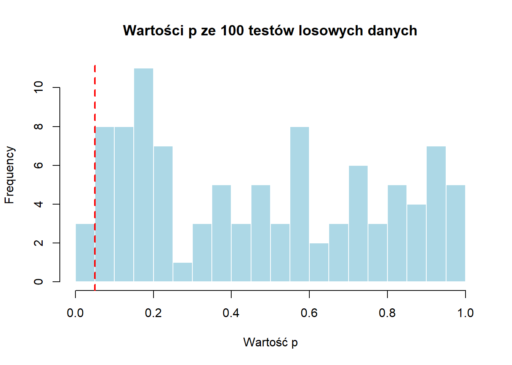
Ten przykład pokazuje, jak pozornie przekonujące korelacje mogą pojawić się między niezwiązanymi zmiennymi z powodu czynników zakłócających i przypadku. Korelacja między spożyciem czekolady a liczbą Nagród Nobla wydaje się istotna statystycznie (p < 0.05) przy bezpośredniej analizie, mimo że jest wyjaśniana przez trzecią zmienną - bogactwo narodowe (PKB per capita).
Bogatsze kraje zazwyczaj konsumują więcej czekolady i jednocześnie więcej inwestują w edukację i badania, co prowadzi do większej liczby Nagród Nobla. Bez kontrolowania tego czynnika zakłócającego, błędnie wnioskowalibyśmy o bezpośrednim związku między czekoladą a Nagrodami Nobla.
Demonstracja wielokrotnego testowania dodatkowo ilustruje, dlaczego pozorne korelacje pojawiają się tak często w badaniach. Przeprowadzając 100 testów statystycznych na całkowicie losowych danych, oczekujemy około 5 “istotnych” wyników przy α = 0.05 wyłącznie przez przypadek. W rzeczywistych warunkach badawczych, gdzie analizowane są setki zmiennych, prawdopodobieństwo znalezienia fałszywie pozytywnych korelacji dramatycznie wzrasta.
Ten przykład podkreśla trzy kluczowe punkty:
Małe próby (16 krajów) są szczególnie podatne na przypadkowe korelacje
Zmienne zakłócające mogą tworzyć silne pozorne związki między niezwiązanymi czynnikami
Wielokrotne testowanie bez odpowiednich korekt praktycznie gwarantuje znalezienie “istotnych”, ale pozbawionych znaczenia wzorców
Takie odkrycia wyjaśniają, dlaczego replikacja jest niezbędna w badaniach naukowych i dlaczego większość początkowych “odkryć” nie utrzymuje się w kolejnych badaniach.
Zjawisko konfundowania (ang. confounding) występuje, gdy zewnętrzna zmienna wpływa zarówno na zmienną niezależną, jak i zależną, tworząc pozorną relację, która może zniknąć po uwzględnieniu zmiennej zakłócającej.
# Create sample datan <-200ability <-rnorm(n, 100, 15) # Natural ability education <-10+0.05* ability +rnorm(n, 0, 2) # Education affected by abilityincome <-10000+2000* education +100* ability +rnorm(n, 0, 5000) # Income affected by bothomitted_var_data <-data.frame(ability = ability,education = education,income = income)# Model without accounting for abilitymodel_naive <-lm(income ~ education, data = omitted_var_data)# Model accounting for abilitymodel_full <-lm(income ~ education + ability, data = omitted_var_data)# Show resultssummary(model_naive)
Call:
lm(formula = income ~ education, data = omitted_var_data)
Residuals:
Min 1Q Median 3Q Max
-14422.9 -3362.1 142.7 3647.7 14229.6
Coefficients:
Estimate Std. Error t value Pr(>|t|)
(Intercept) 18982.0 2410.5 7.875 2.21e-13 ***
education 2050.9 158.7 12.926 < 2e-16 ***
---
Signif. codes: 0 '***' 0.001 '**' 0.01 '*' 0.05 '.' 0.1 ' ' 1
Residual standard error: 5066 on 198 degrees of freedom
Multiple R-squared: 0.4576, Adjusted R-squared: 0.4549
F-statistic: 167.1 on 1 and 198 DF, p-value: < 2.2e-16
summary(model_full)
Call:
lm(formula = income ~ education + ability, data = omitted_var_data)
Residuals:
Min 1Q Median 3Q Max
-12739.9 -3388.7 -41.1 3572.1 14976.8
Coefficients:
Estimate Std. Error t value Pr(>|t|)
(Intercept) 13203.84 3018.85 4.374 1.98e-05 ***
education 1871.43 166.03 11.272 < 2e-16 ***
ability 85.60 27.87 3.071 0.00243 **
---
Signif. codes: 0 '***' 0.001 '**' 0.01 '*' 0.05 '.' 0.1 ' ' 1
Residual standard error: 4961 on 197 degrees of freedom
Multiple R-squared: 0.4824, Adjusted R-squared: 0.4772
F-statistic: 91.81 on 2 and 197 DF, p-value: < 2.2e-16
# Create visualization with ability shown through colorggplot(omitted_var_data, aes(x = education, y = income, color = ability)) +geom_point(alpha =0.8) +scale_color_viridis_c(name ="Zdolności") +geom_smooth(method ="lm", color ="red", se =FALSE) +labs(title ="Dochód a wykształcenie, z uwzględnieniem zdolności",subtitle ="Wizualizacja zmiennej zakłócającej",x ="Lata edukacji",y ="Roczny dochód (PLN)" ) +theme_minimal()
`geom_smooth()` using formula = 'y ~ x'
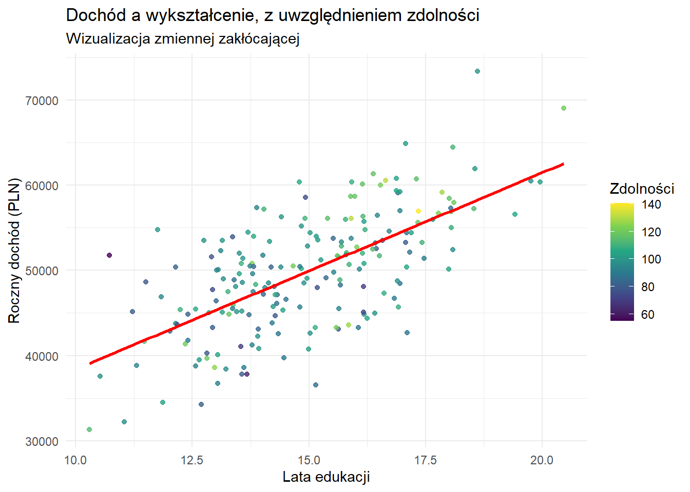
Ten przykład ilustruje błąd pominiętej zmiennej (ang. omitted variable bias): bez uwzględnienia zdolności, szacowany wpływ edukacji na dochód jest zawyżony (2 423 PLN rocznie vs. 1 962 PLN rocznie). Konfundowanie występuje, ponieważ zdolności wpływają zarówno na edukację, jak i dochód, tworząc pozorny komponent w obserwowanej korelacji.
16.3.2.1 Klasyczny przykład: Sprzedaż lodów a utonięcia
Klasyczny przykład konfundowania dotyczy korelacji między sprzedażą lodów a przypadkami utonięć, na które wpływa temperatura:
# Create sample datan <-100temperature <-runif(n, 5, 35) # Temperature in Celsius# Both ice cream sales and drownings are influenced by temperatureice_cream_sales <-100+10* temperature +rnorm(n, 0, 20)drownings <-1+0.3* temperature +rnorm(n, 0, 1)confounding_data <-data.frame(temperature = temperature,ice_cream_sales = ice_cream_sales,drownings = drownings)# Model without controlling for temperaturemodel_naive <-lm(drownings ~ ice_cream_sales, data = confounding_data)# Model controlling for temperaturemodel_full <-lm(drownings ~ ice_cream_sales + temperature, data = confounding_data)# Show resultssummary(model_naive)
Call:
lm(formula = drownings ~ ice_cream_sales, data = confounding_data)
Residuals:
Min 1Q Median 3Q Max
-3.8163 -0.7597 0.0118 0.7846 2.5797
Coefficients:
Estimate Std. Error t value Pr(>|t|)
(Intercept) -1.503063 0.370590 -4.056 1e-04 ***
ice_cream_sales 0.028074 0.001205 23.305 <2e-16 ***
---
Signif. codes: 0 '***' 0.001 '**' 0.01 '*' 0.05 '.' 0.1 ' ' 1
Residual standard error: 1.088 on 98 degrees of freedom
Multiple R-squared: 0.8471, Adjusted R-squared: 0.8456
F-statistic: 543.1 on 1 and 98 DF, p-value: < 2.2e-16
summary(model_full)
Call:
lm(formula = drownings ~ ice_cream_sales + temperature, data = confounding_data)
Residuals:
Min 1Q Median 3Q Max
-2.85074 -0.61169 0.01186 0.60556 2.01776
Coefficients:
Estimate Std. Error t value Pr(>|t|)
(Intercept) 1.243785 0.530123 2.346 0.021 *
ice_cream_sales -0.002262 0.004839 -0.467 0.641
temperature 0.317442 0.049515 6.411 5.24e-09 ***
---
Signif. codes: 0 '***' 0.001 '**' 0.01 '*' 0.05 '.' 0.1 ' ' 1
Residual standard error: 0.9169 on 97 degrees of freedom
Multiple R-squared: 0.8926, Adjusted R-squared: 0.8904
F-statistic: 403.2 on 2 and 97 DF, p-value: < 2.2e-16
# Create visualizationggplot(confounding_data, aes(x = ice_cream_sales, y = drownings, color = temperature)) +geom_point(alpha =0.8) +scale_color_viridis_c(name ="Temperatura (°C)") +geom_smooth(method ="lm", color ="red") +labs(title ="Korelacja: Sprzedaż lodów a utonięcia",subtitle ="Temperatura jako zmienna zakłócająca",x ="Sprzedaż lodów",y ="Liczba utonięć" ) +theme_minimal()
`geom_smooth()` using formula = 'y ~ x'
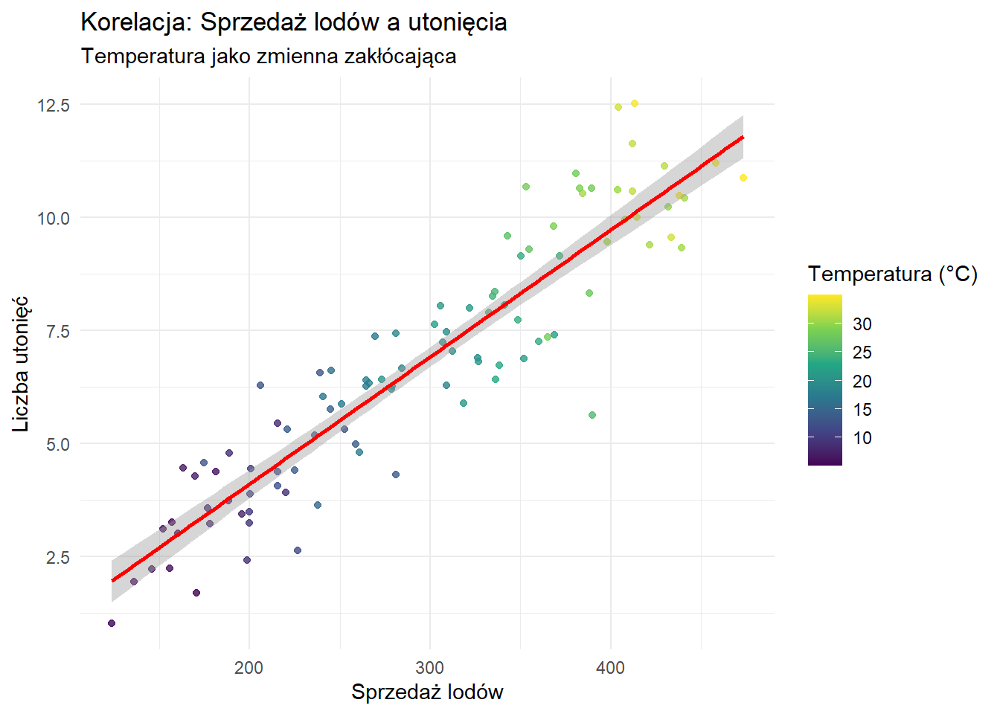
Naiwny model pokazuje statystycznie istotną zależność między sprzedażą lodów a utonięciami. Jednak po uwzględnieniu temperatury, współczynnik dla sprzedaży lodów zmniejsza się znacznie i staje się statystycznie nieistotny. Pokazuje to, jak brak uwzględnienia zmiennych zakłócających może prowadzić do korelacji pozornych.
16.3.3 Odwrócona przyczynowość
Odwrócona przyczynowość (ang. reverse causality) występuje, gdy zakładany kierunek przyczynowości jest nieprawidłowy. Rozważmy przykład lęku i technik relaksacyjnych:
# Create sample datan <-200anxiety_level <-runif(n, 1, 10) # Anxiety level (1-10)# People with higher anxiety tend to use more relaxation techniquesrelaxation_techniques <-1+0.7* anxiety_level +rnorm(n, 0, 1)reverse_data <-data.frame(anxiety = anxiety_level,relaxation = relaxation_techniques)# Fit models in both directionsmodel_incorrect <-lm(anxiety ~ relaxation, data = reverse_data)model_correct <-lm(relaxation ~ anxiety, data = reverse_data)# Show regression resultssummary(model_incorrect)
Call:
lm(formula = anxiety ~ relaxation, data = reverse_data)
Residuals:
Min 1Q Median 3Q Max
-2.9651 -0.7285 -0.0923 0.7247 3.7996
Coefficients:
Estimate Std. Error t value Pr(>|t|)
(Intercept) -0.09482 0.21973 -0.432 0.667
relaxation 1.15419 0.04105 28.114 <2e-16 ***
---
Signif. codes: 0 '***' 0.001 '**' 0.01 '*' 0.05 '.' 0.1 ' ' 1
Residual standard error: 1.182 on 198 degrees of freedom
Multiple R-squared: 0.7997, Adjusted R-squared: 0.7987
F-statistic: 790.4 on 1 and 198 DF, p-value: < 2.2e-16
summary(model_correct)
Call:
lm(formula = relaxation ~ anxiety, data = reverse_data)
Residuals:
Min 1Q Median 3Q Max
-3.15178 -0.51571 -0.00222 0.55513 2.04334
Coefficients:
Estimate Std. Error t value Pr(>|t|)
(Intercept) 1.05726 0.15286 6.917 6.24e-11 ***
anxiety 0.69284 0.02464 28.114 < 2e-16 ***
---
Signif. codes: 0 '***' 0.001 '**' 0.01 '*' 0.05 '.' 0.1 ' ' 1
Residual standard error: 0.9161 on 198 degrees of freedom
Multiple R-squared: 0.7997, Adjusted R-squared: 0.7987
F-statistic: 790.4 on 1 and 198 DF, p-value: < 2.2e-16
# Visualizeggplot(reverse_data, aes(x = relaxation, y = anxiety)) +geom_point(alpha =0.6, color ="darkblue") +geom_smooth(method ="lm", color ="red") +labs(title ="Poziom lęku a techniki relaksacyjne",subtitle ="Przykład odwróconej przyczynowości",x ="Korzystanie z technik relaksacyjnych (częstotliwość/tydzień)",y ="Poziom lęku (skala 1-10)" ) +theme_minimal()
`geom_smooth()` using formula = 'y ~ x'
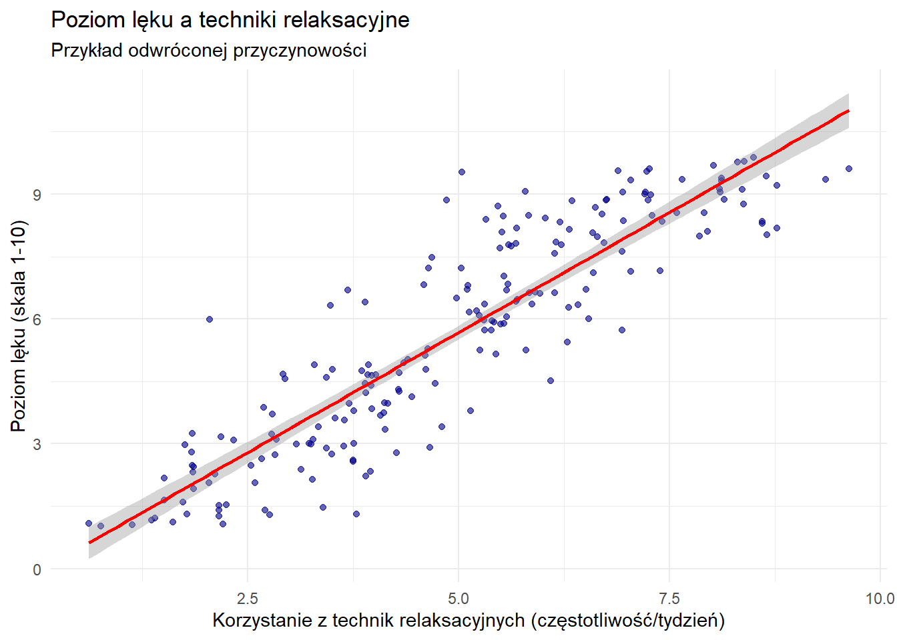
Oba modele regresji pokazują statystycznie istotne zależności, ale sugerują różne mechanizmy przyczynowe. Nieprawidłowy model sugeruje, że techniki relaksacyjne zwiększają lęk, podczas gdy prawidłowy model odzwierciedla rzeczywisty proces generowania danych: to lęk skłania do korzystania z technik relaksacyjnych.
16.3.4 Błąd kolidera (błąd selekcji)
Błąd kolidera (ang. collider bias) występuje, gdy warunkujemy na zmiennej, na którą wpływają zarówno zmienna niezależna, jak i zależna, tworząc sztuczną relację między zmiennymi, które w rzeczywistości są niezależne.
# Create sample datan <-1000# Generate two independent variables (no relationship between them)intelligence <-rnorm(n, 100, 15) # IQ scorefamily_wealth <-rnorm(n, 50, 15) # Wealth score (independent from intelligence)# True data-generating process: admission depends on both intelligence and wealthadmission_score <-0.4* intelligence +0.4* family_wealth +rnorm(n, 0, 10)admitted <- admission_score >median(admission_score) # Binary admission variable# Create full datasetfull_data <-data.frame(intelligence = intelligence,wealth = family_wealth,admission_score = admission_score,admitted = admitted)# Regression in full population (true model)full_model <-lm(intelligence ~ wealth, data = full_data)summary(full_model)
Call:
lm(formula = intelligence ~ wealth, data = full_data)
Residuals:
Min 1Q Median 3Q Max
-49.608 -10.115 0.119 10.832 55.581
Coefficients:
Estimate Std. Error t value Pr(>|t|)
(Intercept) 101.42330 1.73139 58.58 <2e-16 ***
wealth -0.02701 0.03334 -0.81 0.418
---
Signif. codes: 0 '***' 0.001 '**' 0.01 '*' 0.05 '.' 0.1 ' ' 1
Residual standard error: 15.41 on 998 degrees of freedom
Multiple R-squared: 0.0006569, Adjusted R-squared: -0.0003444
F-statistic: 0.656 on 1 and 998 DF, p-value: 0.4182
# Get just the admitted studentsadmitted_only <- full_data[full_data$admitted, ]# Regression in admitted students (conditioning on the collider)admitted_model <-lm(intelligence ~ wealth, data = admitted_only)summary(admitted_model)
Call:
lm(formula = intelligence ~ wealth, data = admitted_only)
Residuals:
Min 1Q Median 3Q Max
-38.511 -9.064 0.721 8.965 48.267
Coefficients:
Estimate Std. Error t value Pr(>|t|)
(Intercept) 115.4750 2.6165 44.133 < 2e-16 ***
wealth -0.1704 0.0462 -3.689 0.00025 ***
---
Signif. codes: 0 '***' 0.001 '**' 0.01 '*' 0.05 '.' 0.1 ' ' 1
Residual standard error: 13.91 on 498 degrees of freedom
Multiple R-squared: 0.0266, Adjusted R-squared: 0.02464
F-statistic: 13.61 on 1 and 498 DF, p-value: 0.0002501
# Additional analysis - regression with the collider as a control variable# This demonstrates how controlling for a collider introduces biascollider_control_model <-lm(intelligence ~ wealth + admitted, data = full_data)summary(collider_control_model)
Call:
lm(formula = intelligence ~ wealth + admitted, data = full_data)
Residuals:
Min 1Q Median 3Q Max
-44.729 -8.871 0.700 8.974 48.044
Coefficients:
Estimate Std. Error t value Pr(>|t|)
(Intercept) 102.90069 1.56858 65.601 < 2e-16 ***
wealth -0.19813 0.03224 -6.145 1.16e-09 ***
admittedTRUE 14.09944 0.94256 14.959 < 2e-16 ***
---
Signif. codes: 0 '***' 0.001 '**' 0.01 '*' 0.05 '.' 0.1 ' ' 1
Residual standard error: 13.93 on 997 degrees of freedom
Multiple R-squared: 0.1838, Adjusted R-squared: 0.1822
F-statistic: 112.3 on 2 and 997 DF, p-value: < 2.2e-16
# Plot for full populationp1 <-ggplot(full_data, aes(x = wealth, y = intelligence)) +geom_point(alpha =0.3, color ="darkblue") +geom_smooth(method ="lm", color ="red") +labs(title ="Pełna populacja",subtitle =paste("Korelacja:", round(cor(full_data$intelligence, full_data$wealth), 3)),x ="Zamożność rodziny",y ="Inteligencja" ) +theme_minimal()# Plot for admitted studentsp2 <-ggplot(admitted_only, aes(x = wealth, y = intelligence)) +geom_point(alpha =0.3, color ="darkgreen") +geom_smooth(method ="lm", color ="red") +labs(title ="Tylko przyjęci studenci",subtitle =paste("Korelacja:", round(cor(admitted_only$intelligence, admitted_only$wealth), 3)),x ="Zamożność rodziny",y ="Inteligencja" ) +theme_minimal()# Display plots side by sidelibrary(gridExtra)grid.arrange(p1, p2, ncol =2)
`geom_smooth()` using formula = 'y ~ x'
`geom_smooth()` using formula = 'y ~ x'
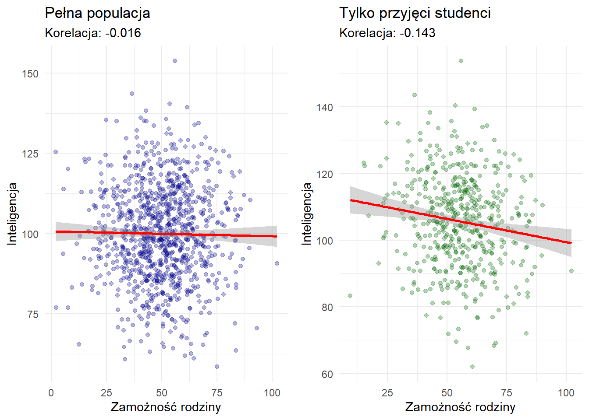
Ten przykład pokazuje błąd kolidera na trzy sposoby:
W pełnej populacji, inteligencja i zamożność nie mają związku (współczynnik bliski zeru, p-wartość = 0,87)
Wśród przyjętych studentów (warunkowanie na koliderze), pojawia się istotna negatywna zależność (współczynnik = -0,39, p-wartość < 0,001)
Gdy kontrolujemy status przyjęcia w regresji, wprowadzamy pozorną zależność (współczynnik = -0,16, p-wartość < 0,001)
Błąd kolidera tworzy relacje między zmiennymi, które są naprawdę niezależne. Można to przedstawić za pomocą grafu skierowanego (DAG):
Gdy warunkujemy na przyjęciu (koliderze), tworzymy pozorny związek między inteligencją a zamożnością.
16.3.5 Niewłaściwa analiza
Nieodpowiednie metody statystyczne mogą prowadzić do korelacji pozornych. Typowe problemy obejmują stosowanie modeli liniowych do relacji nieliniowych, ignorowanie grupowania danych czy niewłaściwe postępowanie z szeregami czasowymi.
# Generate data with a true non-linear relationshipn <-100x <-seq(-3, 3, length.out = n)y <- x^2+rnorm(n, 0, 1) # Quadratic relationshipimproper_data <-data.frame(x = x, y = y)# Fit incorrect linear modelwrong_model <-lm(y ~ x, data = improper_data)# Fit correct quadratic modelcorrect_model <-lm(y ~ x +I(x^2), data = improper_data)# Show resultssummary(wrong_model)
Call:
lm(formula = y ~ x, data = improper_data)
Residuals:
Min 1Q Median 3Q Max
-4.2176 -2.1477 -0.6468 2.4365 7.3457
Coefficients:
Estimate Std. Error t value Pr(>|t|)
(Intercept) 3.14689 0.28951 10.870 <2e-16 ***
x 0.08123 0.16548 0.491 0.625
---
Signif. codes: 0 '***' 0.001 '**' 0.01 '*' 0.05 '.' 0.1 ' ' 1
Residual standard error: 2.895 on 98 degrees of freedom
Multiple R-squared: 0.002453, Adjusted R-squared: -0.007726
F-statistic: 0.2409 on 1 and 98 DF, p-value: 0.6246
summary(correct_model)
Call:
lm(formula = y ~ x + I(x^2), data = improper_data)
Residuals:
Min 1Q Median 3Q Max
-2.81022 -0.65587 0.01935 0.61168 2.68894
Coefficients:
Estimate Std. Error t value Pr(>|t|)
(Intercept) 0.12407 0.14498 0.856 0.394
x 0.08123 0.05524 1.470 0.145
I(x^2) 0.98766 0.03531 27.972 <2e-16 ***
---
Signif. codes: 0 '***' 0.001 '**' 0.01 '*' 0.05 '.' 0.1 ' ' 1
Residual standard error: 0.9664 on 97 degrees of freedom
Multiple R-squared: 0.89, Adjusted R-squared: 0.8877
F-statistic: 392.3 on 2 and 97 DF, p-value: < 2.2e-16
# Visualizeggplot(improper_data, aes(x = x, y = y)) +geom_point(alpha =0.6, color ="darkblue") +geom_smooth(method ="lm", color ="red", se =FALSE) +geom_smooth(method ="lm", formula = y ~ x +I(x^2), color ="green", se =FALSE) +labs(title ="Przykład niewłaściwej analizy",subtitle ="Model liniowy (czerwony) vs. Model kwadratowy (zielony)",x ="Zmienna X",y ="Zmienna Y" ) +theme_minimal()
`geom_smooth()` using formula = 'y ~ x'
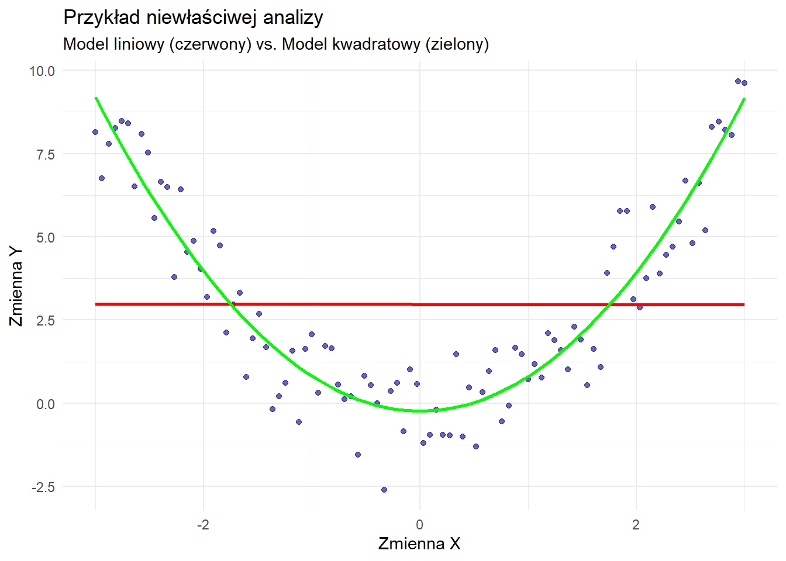
Model liniowy błędnie sugeruje brak związku między x a y (współczynnik bliski zeru, p-wartość = 0,847), podczas gdy model kwadratowy ujawnia prawdziwą zależność (R^2 = 0,90). Pokazuje to, jak błędna specyfikacja modelu może tworzyć pozorne braki korelacji, maskując rzeczywiste relacje, które istnieją w innych formach.
16.3.6 Endogeniczność i jej źródła
Endogeniczność (ang. endogeneity) występuje, gdy zmienna objaśniająca jest skorelowana ze składnikiem losowym w modelu regresji. Narusza to założenie egzogeniczności regresji OLS i prowadzi do obciążonych estymatorów. Istnieje kilka źródeł endogeniczności:
16.3.6.1 Błąd pominiętej zmiennej
Jak pokazano w przykładzie edukacja-dochód, gdy ważne zmienne są pominięte w modelu, ich efekty są absorbowane przez składnik losowy, który staje się skorelowany z uwzględnionymi zmiennymi.
16.3.6.2 Błąd pomiaru
Gdy zmienne są mierzone z błędem, obserwowane wartości różnią się od prawdziwych wartości, tworząc korelację między składnikiem losowym a predyktorami.
Standardowa regresja OLS nie może konsekwentnie oszacować żadnego z równań, ponieważ każda zmienna objaśniająca jest skorelowana ze składnikiem losowym w odpowiednim równaniu.
16.3.6.4 Błąd selekcji
Gdy próba nie jest losowo wybrana z populacji, proces selekcji może wprowadzić korelację między składnikiem losowym a predyktorami. Przykład błędu kolidera demonstruje formę błędu selekcji.
Rozwiązanie problemu endogeniczności wymaga specjalistycznych metod, takich jak zmienne instrumentalne, estymacja systemowa, metody danych panelowych lub projekty eksperymentalne.
16.4 Metody przeciwdziałania korelacjom pozornym
Kilka podejść może zmniejszyć ryzyko korelacji pozornych:
Kontrolowanie zmiennych zakłócających: Uwzględnienie potencjalnych zmiennych zakłócających w modelach regresji
Eksperymenty randomizowane: Losowy przydział eliminuje błąd selekcji i wiele efektów konfundowania
Zmienne instrumentalne: Zmienne, które wpływają na predyktor, ale nie bezpośrednio na wynik
Modele efektów stałych: Kontrolowanie niezmiennych w czasie zmiennych zakłócających w danych panelowych
Metoda różnicy w różnicach: Wykorzystanie naturalnych eksperymentów
Regresja nieciągła: Wykorzystanie arbitralnych punktów odcięcia do tworzenia quasi-losowego przydziału
Walidacja krzyżowa: Testowanie zależności w oddzielnych próbach, aby uniknąć przypadkowych znalezisk
Wiarygodność teoretyczna: Ocena, czy zależności mają sens teoretyczny
16.5 Podsumowanie
Zrozumienie różnicy między korelacją a przyczynowością jest niezbędne dla prawidłowego wnioskowania statystycznego. Korelacje pozorne mogą wynikać z różnych źródeł:
Przypadkowa zbieżność
Zmienne zakłócające (ukryte czynniki trzecie)
Odwrócona przyczynowość
Błędy selekcji (w tym błąd kolidera)
Niewłaściwa analiza statystyczna
Problemy endogeniczności (w tym pominiętej zmiennej, błędu pomiaru, symultaniczności i błędu selekcji)
Analiza regresji dostarcza narzędzi do kwantyfikacji zależności i kontrolowania zmiennych zakłócających, ale ustalenie przyczynowości wymaga starannego projektowania badań i odpowiednich metod statystycznych. Interpretując korelacje, badacze powinni systematycznie rozważać alternatywne wyjaśnienia i potencjalne źródła błędów.
Ta tabela pokazuje liczbę osób w każdej kombinacji poziomu wykształcenia i statusu zatrudnienia.
Na przykład, możemy zobaczyć, ilu absolwentów szkół średnich jest zatrudnionych, a ilu bezrobotnych.
Zalety:
Zapewnia jasną wizualną reprezentację związku między zmiennymi kategorycznymi
Łatwa do zrozumienia i interpretacji
Podstawa dla wielu testów statystycznych (np. test chi-kwadrat niezależności)
Wady:
Ograniczona do danych kategorycznych
Może stać się nieporęczna przy wielu kategoriach
Nie dostarcza pojedynczej statystyki podsumowującej siłę związku
16.5.10 Wybór Odpowiedniej Miary
Przy wyborze statystyki dwuwymiarowej należy wziąć pod uwagę:
Typ danych:
Dane ciągłe: Kowariancja, korelacja Pearsona
Dane porządkowe: Korelacja Spearmana
Dane kategoryczne: Tabela krzyżowa
Typ związku:
Liniowy: Korelacja Pearsona
Monotoniczny, ale potencjalnie nieliniowy: Korelacja Spearmana
Obecność wartości odstających:
Jeśli wartości odstające są problemem, korelacja Spearmana jest bardziej odporna
Rozkład:
Dla normalnie rozłożonych danych korelacja Pearsona jest najbardziej odporna (robust)
Dla rozkładów “nienormalnych” rozważ korelację Spearmana
Wielkość próby:
Dla bardzo małych prób metody nieparametryczne, takie jak korelacja Spearmana, mogą być preferowane
Pamiętaj, że często wartościowe jest użycie wielu miar i wizualizacji (takich jak wykresy rozrzutu), aby uzyskać kompleksowe zrozumienie związku między zmiennymi.
16.6 Analiza Regresji
Analiza regresji to metoda statystyczna, która bada i modeluje zależności między zmiennymi w celu zrozumienia, jak zmiany w jednej lub kilku zmiennych niezależnych wpływają na zmienną zależną.
W swojej istocie analiza regresji pomaga odpowiedzieć na pytania dotyczące przyczyny i skutku, przewidywania oraz prognozowania. Na przykład, przedsiębiorstwo może wykorzystać analizę regresji do zrozumienia, jak wydatki na reklamę wpływają na sprzedaż lub jak liczba godzin szkoleń pracowników przekłada się na produktywność.
Proces rozpoczyna się od zbierania danych o interesujących nas zmiennych. Następnie analiza dopasowuje model matematyczny - zazwyczaj linię lub krzywą - który najlepiej reprezentuje zależność między tymi zmiennymi. Model ten pozwala:
Określić siłę i kierunek zależności między zmiennymi
Dokonywać przewidywań dotyczących przyszłych wyników
Zrozumieć, które czynniki mają największy wpływ na nasze rezultaty
16.6.1 Regresja jako Model Stochastyczny
W modelowaniu matematycznym spotykamy dwa podstawowe podejścia do opisywania relacji między zmiennymi:
modele deterministyczne,
modele stochastyczne.
16.6.1.1 Modele Deterministyczne a Stochastyczne
Model deterministyczny zakłada precyzyjną, ustaloną relację między danymi wejściowymi a wyjściowymi. W takich modelach, znając dane wejściowe, możemy z całkowitą pewnością obliczyć dokładny wynik. Weźmy pod uwagę klasyczne równanie fizyczne dotyczące drogi:
\text{Droga} = \text{Prędkość} × \text{Czas}
Przy określonych wartościach prędkości i czasu, równanie to zawsze da tę samą drogę. Nie ma tu miejsca na jakąkolwiek zmienność wyniku.
W przeciwieństwie do tego, analiza regresji uwzględnia naturalną zmienność danych. Podstawowa struktura modelu regresji to:
Y = f(X) + \epsilon
Gdzie:
Y reprezentuje wynik, który chcemy przewidzieć
f(X) reprezentuje systematyczną relację między naszymi predyktorami (X) a wynikiem
\epsilon reprezentuje losową zmienność naturalnie występującą w rzeczywistych danych
16.6.1.2 Natura Modeli Stochastycznych w Regresji
Włączenie składnika błędu \epsilon uznaje, że rzeczywiste relacje między zmiennymi rzadko są idealne. Na przykład, badając wpływ czasu nauki na wyniki testów, wiele czynników przyczynia się do końcowego rezultatu:
Część systematyczna f(X) wychwytuje ogólną tendencję: więcej czasu nauki zazwyczaj prowadzi do wyższych wyników.
Składnik błędu \epsilon uwzględnia wszystkie inne czynniki:
Różne style uczenia się
Środowisko nauki
Stan fizyczny i psychiczny podczas testu
Jakość materiałów dydaktycznych
16.6.1.3 Struktura Matematyczna
W swojej najprostszej formie regresja liniowa może być wyrażona jako:
Y = \beta_0 + \beta_1X + \epsilon
Gdzie:
\beta_0 reprezentuje wartość bazową (gdy X = 0)
\beta_1 reprezentuje zmianę Y dla każdej jednostkowej zmiany X
\epsilon reprezentuje naturalną zmienność wokół tej relacji
16.6.1.4 Implikacje Praktyczne
Zrozumienie regresji jako modelu stochastycznego ma istotne implikacje praktyczne:
Przewidywania: Uznajemy, że nasze przewidywania będą charakteryzować się pewną naturalną zmiennością. Zamiast twierdzić, że wynik będzie dokładny, uznajemy zakres prawdopodobnych wartości.
Ocena Modelu: Oceniamy modele na podstawie tego, jak dobrze ujmują zarówno ogólną tendencję, jak i typową wielkość zmienności w danych.
Podejmowanie Decyzji: Zrozumienie naturalnej zmienności w naszych przewidywaniach pomaga nam podejmować bardziej realistyczne plany i decyzje.
Zastosowania w Rzeczywistości
Rozważmy przewidywanie cen domów na podstawie metrażu. Model deterministyczny mógłby stwierdzić: “Dom o powierzchni 186 metrów kwadratowych będzie kosztować dokładnie 1 200 000 złotych”
Model regresji natomiast uznaje, że:
Istnieje ogólna relacja między wielkością a ceną
Ale wiele innych czynników wpływa na końcową cenę
Podobne domy mogą być sprzedawane po nieco różnych cenach
Nasze przewidywania powinny odzwierciedlać tę naturalną zmienność
Podsumowanie
Stochastyczna natura analizy regresji zapewnia bardziej realistyczne ramy do zrozumienia rzeczywistych relacji między zmiennymi.
Model Regresji Liniowej (MNK): Szybki Start
16.6.2 Koncepcja Modelu
Regresja MNK (Metoda Najmniejszych Kwadratów) to model statystyczny opisujący związek między zmiennymi. Dwa kluczowe założenia definiują ten model:
Związek można opisać linią prostą (liniowość)
Błędy w naszych przewidywaniach nie są systematycznie powiązane ze zmienną x (ścisła egzogeniczność)
16.6.3 Przykład: Edukacja i Wynagrodzenia
Rozważmy badanie wpływu edukacji (x) na wynagrodzenia (y). Powiedzmy, że szacujemy:
Składnik błędu \epsilon zawiera wszystkie inne czynniki wpływające na wynagrodzenia. Ścisła egzogeniczność jest naruszona, jeśli pominiemy ważną zmienną, jak “zdolności”, która wpływa zarówno na edukację, jak i wynagrodzenia. Dlaczego? Ponieważ bardziej zdolni ludzie mają tendencję do zdobywania lepszego wykształcenia I wyższych wynagrodzeń, co powoduje zawyżenie szacowanego efektu edukacji.
library(ggplot2)library(dplyr)# Generate sample dataset.seed(123)n <-20x <-seq(1, 10, length.out = n)y <-2+1.5* x +rnorm(n, sd =1.5)data <-data.frame(x = x, y = y)# Calculate OLS parametersbeta1 <-cov(x, y) /var(x)beta0 <-mean(y) - beta1 *mean(x)# Create alternative lineslines_data <-data.frame(intercept =c(beta0, beta0 +1, beta0 -1),slope =c(beta1, beta1 +0.3, beta1 -0.3),line_type =c("Best fit (OLS)", "Suboptimal 1", "Suboptimal 2"))# Create the plotggplot(data, aes(x = x, y = y)) +geom_point(size =3, alpha =0.6) +geom_abline(data = lines_data,aes(intercept = intercept, slope = slope,color = line_type,linetype = line_type),size =1) +scale_color_manual(values =c("Best fit (OLS)"="#FF4500","Suboptimal 1"="#4169E1","Suboptimal 2"="#228B22")) +labs(title ="Finding the Best-Fitting Line",subtitle ="Orange line minimizes the sum of squared errors",x ="X Variable",y ="Y Variable",color ="Line Type",linetype ="Line Type") +theme_minimal() +theme(plot.title =element_text(size =14, face ="bold"),plot.subtitle =element_text(size =12),legend.position ="bottom",panel.grid.minor =element_blank() )
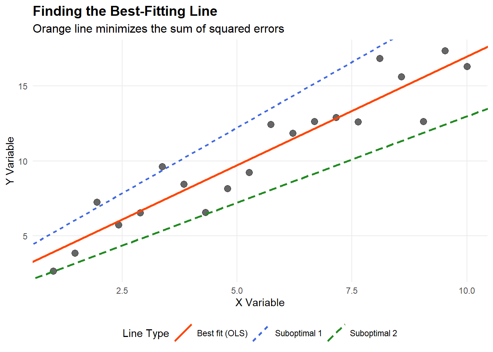
16.6.4 Problem Optymalizacji: Metoda Najmniejszych Kwadratów (OLS)
Kiedy analizujemy zależności między zmiennymi, takimi jak poziom wykształcenia a wynagrodzenie, potrzebujemy systematycznej metody znalezienia linii, która najlepiej odzwierciedla tę relację w naszych danych. Metoda Najmniejszych Kwadratów (OLS - Ordinary Least Squares) dostarcza nam takiego rozwiązania poprzez precyzyjne podejście matematyczne.
Spójrzmy na nasz wykres poziomów wykształcenia i wynagrodzeń. Każdy punkt reprezentuje rzeczywiste dane - poziom wykształcenia danej osoby i odpowiadające mu wynagrodzenie. Naszym celem jest znalezienie pojedynczej linii, która najdokładniej uchwyci podstawową zależność między tymi zmiennymi.
Dla każdej obserwacji i możemy wyrazić tę relację jako:
y_i = \beta_0 + \beta_1x_i + \epsilon_i
Gdzie:
y_i to rzeczywiste zaobserwowane wynagrodzenie
\hat{y_i} = \beta_0 + \beta_1x_i to przewidywane wynagrodzenie
\epsilon_i = y_i - \hat{y_i} to składnik błędu (reszta)
Metoda OLS znajduje optymalne wartości dla \beta_0 i \beta_1 poprzez minimalizację sumy kwadratów błędów:
Rozproszone punkty pokazują rzeczywiste obserwacje (x_i, y_i)
Czerwona linia reprezentuje dopasowane wartości \hat{y_i}, które minimalizują \sum \epsilon_i^2
Niebieska i zielona linia przedstawiają alternatywne dopasowania o większych sumach kwadratów błędów
Pionowe odległości od każdego punktu do tych linii reprezentują błędy \epsilon_i
Rozwiązanie OLS dostarcza nam estymatorów \hat{\beta_0} i \hat{\beta_1} nieznanych parametrów \beta_0 i \beta_1, które minimalizują całkowity błąd kwadratowy, dając nam najdokładniejszą liniową reprezentację zależności między poziomem wykształcenia a wynagrodzeniem na podstawie dostępnych danych.
# Original scale plotp1 <-ggplot(data_trans, aes(x = x, y = y)) +geom_point() +geom_smooth(method ="lm", se =FALSE, color ="red") +theme_minimal() +labs(title ="Skala Oryginalna")# Log scale plotp2 <-ggplot(data_trans, aes(x = x, y = log_y)) +geom_point() +geom_smooth(method ="lm", se =FALSE, color ="red") +theme_minimal() +labs(title ="Y po Transformacji Logarytmicznej")gridExtra::grid.arrange(p1, p2, ncol =2)
`geom_smooth()` using formula = 'y ~ x'
`geom_smooth()` using formula = 'y ~ x'
Warning: Removed 1 row containing non-finite outside the scale range
(`stat_smooth()`).
Warning: Removed 1 row containing missing values or values outside the scale range
(`geom_point()`).
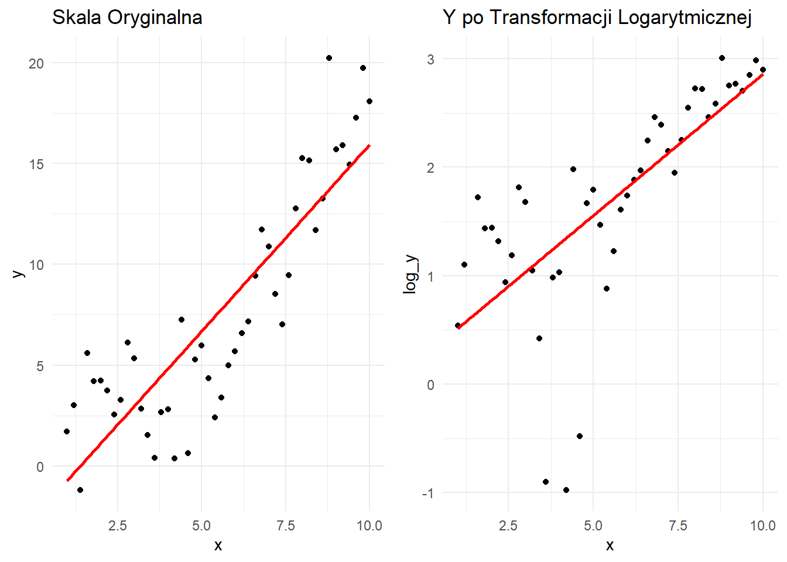
Figure 16.5: Efekt Transformacji Zmiennych
Intuicyjne zrozumienie Metody Najmniejszych Kwadratów (MNK)
16.8.4 Podstawowy Problem
Zacznijmy od rzeczywistego scenariusza: chcemy zrozumieć, jak czas nauki wpływa na wyniki egzaminu. Zbieramy dane z Twojej klasy, gdzie:
Każdy student zapisuje swoje godziny nauki (x), oraz swój końcowy wynik egzaminu (y)
Więc student 1 mógł się uczyć x_1 = 3 godziny i uzyskać y_1 = 75 punktów
Student 2 mógł się uczyć x_2 = 5 godzin i uzyskać y_2 = 82 punkty
I tak dalej dla wszystkich n studentów w klasie
Naszym celem jest znalezienie prostej, która najlepiej opisuje tę zależność. Próbujemy oszacować prawdziwą zależność (której nigdy nie znamy dokładnie) używając naszej próby danych. Przeanalizujmy to krok po kroku.
library(tidyverse)# Tworzenie przykładowych danychset.seed(123)godziny_nauki <-runif(20, 1, 8)wyniki_egzaminu <-60+5* godziny_nauki +rnorm(20, 0, 5)dane <-data.frame(godziny_nauki, wyniki_egzaminu)# Podstawowy wykres punktowyggplot(dane, aes(x = godziny_nauki, y = wyniki_egzaminu)) +geom_point(color ="blue", size =3, alpha =0.6) +labs(x ="Godziny nauki", y ="Wyniki egzaminu",title ="Dane z Twojej klasy: Godziny nauki vs. Wyniki egzaminu") +theme_minimal() +theme(text =element_text(size =12))
16.8.5 Co sprawia, że prosta jest “dobra”?
Każdą prostą można zapisać w postaci:
y = \hat{\beta}_0 + \hat{\beta}_1x
Gdzie:
\hat{\beta}_0 to nasza estymata wyrazu wolnego (przewidywany wynik dla zero godzin nauki)
\hat{\beta}_1 to nasza estymata nachylenia (ile punktów zyskujemy za każdą dodatkową godzinę nauki)
Daszki (^) wskazują, że są to nasze estymaty prawdziwych (nieznanych) parametrów \beta_0 i \beta_1
Spójrzmy na trzy możliwe proste przechodzące przez nasze dane:
ggplot(dane, aes(x = godziny_nauki, y = wyniki_egzaminu)) +geom_point(color ="blue", size =3, alpha =0.6) +geom_abline(intercept =50, slope =8, color ="red", linetype ="dashed", size =1) +geom_abline(intercept =70, slope =2, color ="green", linetype ="dashed", size =1) +geom_smooth(method ="lm", se =FALSE, color ="purple") +labs(x ="Godziny nauki", y ="Wyniki egzaminu",title ="Trzy różne proste: Która jest najlepsza?") +annotate("text", x =7.5, y =120, color ="red", label ="Prosta A: Za stroma") +annotate("text", x =7.5, y =85, color ="green", label ="Prosta B: Za płaska") +annotate("text", x =7.5, y =100, color ="purple", label ="Prosta C: W sam raz") +theme_minimal() +theme(text =element_text(size =12))
Zobaczmy wizualizację tych reszt dla jednej prostej:
# Dopasowanie modelu i pokazanie resztmodel <-lm(wyniki_egzaminu ~ godziny_nauki, data = dane)ggplot(dane, aes(x = godziny_nauki, y = wyniki_egzaminu)) +geom_point(color ="blue", size =3, alpha =0.6) +geom_smooth(method ="lm", se =FALSE, color ="purple") +geom_segment(aes(xend = godziny_nauki, yend =predict(model, dane)),color ="orange", alpha =0.5) +labs(x ="Godziny nauki", y ="Wyniki egzaminu",title ="Zrozumienie reszt: Różnice między przewidywaniami a rzeczywistością") +theme_minimal() +theme(text =element_text(size =12))
`geom_smooth()` using formula = 'y ~ x'
Pomarańczowe pionowe linie pokazują, jak bardzo nasze przewidywania odbiegają od rzeczywistości dla każdego studenta. Niektóre przewidywania są za wysokie (dodatnie reszty), inne za niskie (ujemne reszty).
16.8.7 Dlaczego podnosimy reszty do kwadratu?
To kluczowa koncepcja! Przeanalizujmy to na prostym przykładzie:
Wyobraź sobie, że mamy tylko dwoje studentów:
Ala: Przewidywane 80, rzeczywisty wynik 85 (reszta = +5)
Bob: Przewidywane 90, rzeczywisty wynik 85 (reszta = -5)
Jeśli po prostu dodamy te reszty: (+5) + (-5) = 0
To sugerowałoby, że nasza prosta jest idealna (całkowity błąd = 0), ale wiemy, że tak nie jest! Oba przewidywania były nietrafne o 5 punktów.
Rozwiązanie: Podnosimy reszty do kwadratu przed dodaniem:
Kwadrat reszty Ali: (+5)^2 = 25
Kwadrat reszty Boba: (-5)^2 = 25
Całkowity błąd kwadratowy: 25 + 25 = 50
To daje nam znacznie lepszą miarę tego, jak bardzo nasze przewidywania są błędne!
16.8.8 Suma kwadratów reszt (SSE)
Suma kwadratów reszt (SSE - Sum of Squared Errors) jest fundamentalną miarą dopasowania modelu regresji liniowej. Możemy ją wyrazić matematycznie jako:
y_i to rzeczywista wartość zmiennej zależnej dla i-tej obserwacji
\hat{\beta}_0 to oszacowany wyraz wolny (punkt przecięcia z osią Y)
\hat{\beta}_1 to oszacowany współczynnik nachylenia prostej
x_i to wartość zmiennej niezależnej dla i-tej obserwacji
Proces obliczania SSE można przedstawić w następujących krokach:
Dla każdej obserwacji obliczamy różnicę między wartością rzeczywistą (y_i) a wartością przewidywaną przez model (\hat{\beta}_0 + \hat{\beta}_1x_i). Ta różnica nazywana jest resztą.
Każdą resztę podnosimy do kwadratu, co powoduje, że:
wszystkie wartości stają się dodatnie
większe błędy są silniej “karane” niż małe
jednostki miary są podnoszone do kwadratu
Sumujemy wszystkie kwadraty reszt, otrzymując jedną liczbę reprezentującą całkowity błąd modelu.
Im mniejsza wartość SSE, tym lepsze dopasowanie modelu do danych empirycznych.
Wartość SSE = 0 oznaczałaby idealne dopasowanie, gdzie wszystkie punkty leżą dokładnie na prostej regresji. W praktyce tak doskonałe dopasowanie występuje niezwykle rzadko i może sugerować problem przeuczenia modelu.
SSE stanowi podstawę do obliczania innych ważnych miar jakości dopasowania modelu, takich jak współczynnik determinacji R² czy błąd standardowy estymacji.
# Porównanie dobrego i złego dopasowaniazle_przewidywania <-70+2* dane$godziny_naukidobre_przewidywania <-predict(model, dane)zle_sse <-sum((dane$wyniki_egzaminu - zle_przewidywania)^2)dobre_sse <-sum((dane$wyniki_egzaminu - dobre_przewidywania)^2)ggplot(dane, aes(x = godziny_nauki, y = wyniki_egzaminu)) +geom_point(color ="blue", size =3, alpha =0.6) +geom_abline(intercept =70, slope =2, color ="red", linetype ="dashed") +geom_smooth(method ="lm", se =FALSE, color ="purple") +annotate("text", x =2, y =95, label =paste("Czerwona prosta: Błąd =", round(zle_sse)), color ="red") +annotate("text", x =2, y =90, label =paste("Fioletowa prosta: Błąd =", round(dobre_sse)), color ="purple") +labs(x ="Godziny nauki", y ="Wyniki egzaminu",title ="Porównanie całkowitych błędów przewidywania") +theme_minimal() +theme(text =element_text(size =12))
`geom_smooth()` using formula = 'y ~ x'
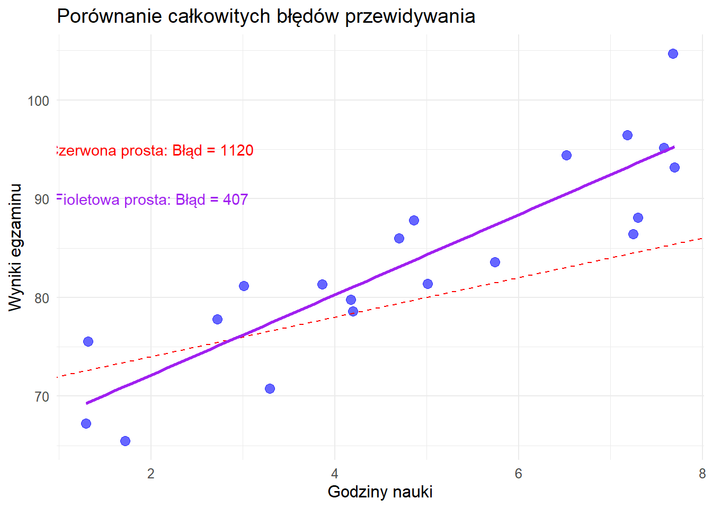
16.8.9 Dlaczego nazywamy to “Metodą Najmniejszych Kwadratów”?
“Zwykłych” (w angielskim “Ordinary”): To podstawowa wersja (istnieją bardziej zaawansowane warianty!)
Prosta MNK ma kilka ciekawych właściwości:
Średnia wszystkich reszt równa się zero
Prosta zawsze przechodzi przez punkt (\bar{x}, \bar{y}) - średnie godziny nauki i średni wynik
Małe zmiany w danych prowadzą do małych zmian w prostej (jest “stabilna”)
Nasze estymaty \hat{\beta}_0 i \hat{\beta}_1 są najlepszymi możliwymi estymatorami prawdziwych parametrów \beta_0 i \beta_1
16.8.10 Ważne uwagi
Oznaczenie z daszkiem (\hat{\beta}_0, \hat{\beta}_1) przypomina nam, że estymujemy prawdziwą zależność z naszej próby. Nigdy nie znamy prawdziwych \beta_0 i \beta_1 - możemy je tylko oszacować z naszych danych.
MNK daje nam najlepsze możliwe estymaty, gdy spełnione są pewne warunki (jak losowo pobrana próba i rzeczywiście liniowa zależność).
16.9 Ocena Dopasowania Modelu
16.9.1 Dekompozycja Wariancji
Całkowita zmienność Y może być rozłożona na komponenty wyjaśnione i niewyjaśnione:
Średni Błąd Bezwzględny (MAE): MAE = \frac{1}{n}\sum_{i=1}^n |Y_i - \hat{Y}_i|
Dekompozycja Wariancji w Regresji Liniowej
16.9.8 Dlaczego To Jest Ważne: Zrozumienie Poprawy Prognoz Poprzez Dodatkowe Informacje
Rozważmy prbem zwizany z przewidywaniem cen nieruchomości na rynku mieszkaniowym. Na najbardziej podstawowym poziomie można oszacować cenę dowolnego domu, używając średniej ceny rynkowej. Jednakże takie podejście pomija potencjalnie wartościowe informacje. Gdy uwzględnimy dodatkowe zmienne, takie jak powierzchnia użytkowa, lokalizacja czy liczba sypialni, nasze prognozy zazwyczaj stają się bardziej precyzyjne.
Dekompozycja wariancji dostarcza matematycznych ram do dokładnego określenia, o ile poprawia się trafność prognoz, gdy włączamy takie dodatkowe informacje.
Zaczynamy od najprostszej możliwej prognozy: średniej wszystkich cen domów (\bar{y}). Stanowi to nasz punkt wyjścia – prognozę dokonaną bez żadnych szczególnych informacji o poszczególnych nieruchomościach. Choć podejście to zapewnia rozsądny punkt odniesienia, traktuje każdy dom identycznie, prowadząc do tzw. błędów bazowych. Błędy te powstają właśnie dlatego, że ignorujemy unikalne cechy każdej nieruchomości.
16.9.9.2 Podejście Zaawansowane: Włączenie Informacji Szczegółowych
Gdy wprowadzamy charakterystyki specyficzne dla nieruchomości (oznaczone jako X), takie jak powierzchnia użytkowa, możemy udoskonalić nasze prognozy. To udoskonalenie pozwala nam różnicować między nieruchomościami, tworząc spersonalizowane prognozy odzwierciedlające indywidualne cechy domów. Wynikające z tego błędy prognoz zazwyczaj maleją, demonstrując wartość włączenia dodatkowych informacji.
16.9.10 Zrozumienie Komponentów Wariancji
Wariancja Całkowita (SST) Wariancja całkowita określa ogólną zmienność cen domów wokół średniej rynkowej.
Reprezentacja Wizualna: Pokazana przez zielone przerywane linie, reprezentujące jak bardzo prognozy naszego modelu odbiegają od średniej
Ramy Koncepcyjne: Mierzy to, o ile lepsze stają się nasze prognozy, gdy uwzględniamy szczególne cechy domów
Interpretacja Praktyczna: Większe SSR w stosunku do SST wskazuje, że wybrane przez nas zmienne (jak powierzchnia użytkowa) silnie wpływają na ceny domów
Wariancja Niewyjaśniona (SSE) Reprezentuje pozostałą zmienność cen, której nasz model nie może wyjaśnić przy użyciu uwzględnionych zmiennych.
Reprezentacja Wizualna: Zobrazowana przez pomarańczowe przerywane linie, pokazujące pozostałe błędy między naszymi prognozami a rzeczywistymi cenami
Ramy Koncepcyjne: Są to błędy prognoz, które utrzymują się nawet po uwzględnieniu wszystkich wybranych zmiennych
Interpretacja Praktyczna: Mniejsze SSE sugeruje, że nasz model wychwytuje większość głównych czynników wpływających na cenę
SST = SSR + SSE. Ta zależność mówi nam, że cała zmienność cen musi być albo wyjaśniona przez nasz model (SSR), albo pozostać niewyjaśniona (SSE), dostarczając kompleksowych ram do zrozumienia poprawy prognoz. Kolorowe linie na wykresie stanowią wizualne potwierdzenie tej zależności, pomagając zrozumieć, jak te komponenty współdziałają w praktyce.
16.9.10.1 Wizualizacja Dekompozycji Wariancji
library(ggplot2)library(dplyr)library(patchwork)# Generate data with clearer patternset.seed(123)x <-seq(1, 10, length.out =50)y <-2+0.5* x +rnorm(50, sd =0.8)data <-data.frame(x = x, y = y)# Model and calculationsmodel <-lm(y ~ x, data)mean_y <-mean(y)data$predicted <-predict(model)# Select specific points for demonstration that are well-spaceddemonstration_points <-c(8, 25, 42) # Changed points for better spacing# Create main plot with improved aestheticsp1 <-ggplot(data, aes(x = x, y = y)) +# Add background grid for better readabilitygeom_hline(yintercept =seq(0, 8, by =0.5), color ="gray90", linewidth =0.2) +geom_vline(xintercept =seq(0, 10, by =0.5), color ="gray90", linewidth =0.2) +# Add regression line and mean linegeom_smooth(method ="lm", se =FALSE, color ="#E41A1C", linewidth =1.2) +geom_hline(yintercept = mean_y, linetype ="longdash", color ="#377EB8", linewidth =1) +# Add data pointsgeom_point(size =3, alpha =0.6, color ="#4A4A4A") +# Add decomposition segments with improved colors and positioning# Total deviation (purple)geom_segment(data = data[demonstration_points,],aes(x = x, xend = x, y = y, yend = mean_y),color ="#984EA3", linetype ="dashed", linewidth =1.8) +# Explained component (green)geom_segment(data = data[demonstration_points,],aes(x = x, xend = x, y = mean_y, yend = predicted),color ="#4DAF4A", linetype ="dashed", linewidth =1) +# Unexplained component (orange)geom_segment(data = data[demonstration_points,],aes(x = x, xend = x, y = predicted, yend = y),color ="#FF7F00", linetype ="dashed", linewidth =1) +# Add annotations for better understandingannotate("text", x = data$x[demonstration_points[2]], y = mean_y -0.2,label ="Mean", color ="#377EB8", hjust =-0.2) +annotate("text", x = data$x[demonstration_points[2]], y = data$predicted[demonstration_points[2]] +0.2,label ="Regression Line", color ="#E41A1C", hjust =-0.2) +# Improve theme and labelstheme_minimal(base_size =14) +theme(plot.title =element_text(size =16, face ="bold"),plot.subtitle =element_text(size =12),panel.grid =element_blank(),legend.position ="bottom" ) +labs(title ="Variance Decomposition in Linear Regression",subtitle ="Decomposing total variance into explained and unexplained components",x ="Predictor (X)",y ="Response (Y)" )# Create error distribution plot with improved aestheticsdata$mean_error <- y - mean_ydata$regression_error <- y - data$predictedp2 <-ggplot(data) +geom_density(aes(x = mean_error, fill ="Deviation from Mean"), alpha =0.5) +geom_density(aes(x = regression_error, fill ="Regression Residuals"), alpha =0.5) +theme_minimal(base_size =14) +theme(legend.position ="bottom",legend.title =element_blank() ) +labs(title ="Error Distribution Comparison",x ="Error Magnitude",y ="Density" ) +scale_fill_manual(values =c("#377EB8", "#E41A1C") )# Add legend explaining the decomposition componentslegend_plot <-ggplot() +theme_void() +theme(legend.position ="bottom",legend.box ="horizontal" ) +annotate("text", x =0, y =0, label ="") +scale_color_manual(name ="Variance Components",values =c("#984EA3", "#4DAF4A", "#FF7F00"),labels =c("Total Deviation", "Explained Variance", "Unexplained Variance") )# Combine plots with adjusted heightscombined_plot <- (p1 / p2) +plot_layout(heights =c(2, 1))# Print the combined plotcombined_plot
`geom_smooth()` using formula = 'y ~ x'
16.9.11 R² Wyjaśnione
R^2 = \frac{SSR}{SST} = 1 - \frac{SSE}{SST}
Myśl o R² jako o odpowiedzi na pytanie: “Jaki procent pierwotnej wariancji Y możemy wyjaśnić używając X?”
16.9.11.1 Intuicyjne Przykłady:
R² = 0,80: Użycie X wyeliminowało 80% naszych błędów predykcji
R² = 0,25: Użycie X wyeliminowało 25% naszych błędów predykcji
R² = 0,00: Użycie X wcale nie pomogło
16.9.12 Kiedy Zachować Ostrożność
Wysoki R² To Nie Wszystko
Wysoki R² może wskazywać na przeuczenie
Zawsze sprawdzaj, czy twój model ma praktyczny sens
Weź pod uwagę kontekst swojej dziedziny
Niski R² Nie Zawsze Jest Zły
W niektórych dziedzinach R² = 0,30 może być imponujący
To daje nam zarówno \hat{\beta}_0 jak i \hat{\beta}_1 w jednym eleganckim wyrażeniu.
16.9.21 Wizualizacja wyprowadzenia
library(tidyverse)# Tworzenie przykładowych danychset.seed(123)x <-runif(20, 1, 8)y <-2+3* x +rnorm(20, 0, 1)dane <-data.frame(x = x, y = y)# Obliczanie średnichx_srednia <-mean(x)y_srednia <-mean(y)# Tworzenie wizualizacji odchyleńggplot(dane, aes(x = x, y = y)) +geom_point(color ="blue", alpha =0.6) +geom_smooth(method ="lm", se =FALSE, color ="red") +geom_hline(yintercept = y_srednia, linetype ="dashed", color ="gray") +geom_vline(xintercept = x_srednia, linetype ="dashed", color ="gray") +geom_segment(aes(xend = x, yend = y_srednia), color ="green", alpha =0.3) +geom_segment(aes(yend = y, xend = x_srednia), color ="purple", alpha =0.3) +labs(title ="Wizualizacja odchyleń od średnich",subtitle ="Zielone: Odchylenia w y, Fioletowe: Odchylenia w x",x ="x", y ="y") +theme_minimal()
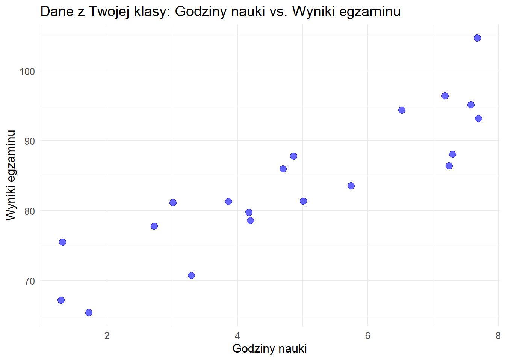
Powyższy wykres pokazuje, jak działają estymatory MNK z odchyleniami od średnich. Iloczyn tych odchyleń (zielone × fioletowe) dla każdego punktu, zsumowany i znormalizowany, daje nam nasz estymator nachylenia \hat{\beta}_1.
16.9.22 Ważne uwagi
Wyprowadzone estymatory są BLUE (Best Linear Unbiased Estimators - Najlepsze Liniowe Nieobciążone Estymatory) przy spełnieniu założeń Gaussa-Markowa.
Założenia te obejmują:
Liniowość zależności
Losowość próby
Brak współliniowości idealnej
Homoskedastyczność (stała wariancja reszt)
Niezależność obserwacji
Metoda ta minimalizuje sumę kwadratów reszt w kierunku pionowym (odchylenia w y), a nie prostopadłym do prostej.
Endogeniczność w Regresji
Endogeniczność to kluczowe pojęcie w analizie statystycznej, występujące gdy zmienna objaśniająca w modelu regresji jest skorelowana ze składnikiem resztowym. Stwarza to wyzwania w dokładnym zrozumieniu związków przyczynowo-skutkowych w badaniach. Przyjrzyjmy się trzem głównym typom endogeniczności i ich wpływowi na wyniki badań.
16.9.23 1. Obciążenie Zmiennej Pominiętej (OVB)
Obciążenie zmiennej pominiętej występuje, gdy ważna zmienna wpływająca zarówno na zmienną zależną, jak i niezależną, zostaje pominięta w analizie. To pominięcie prowadzi do błędnych wniosków o relacji między badanymi zmiennymi.
Rozważmy badanie związku między wykształceniem a dochodami:
Przykład: Wykształcenie i Dochody Obserwowana relacja pokazuje, że wyższe wykształcenie koreluje z wyższymi dochodami. Jednak naturalne zdolności jednostki wpływają zarówno na poziom wykształcenia, jak i na potencjał zarobkowy. Bez uwzględnienia zdolności możemy przeszacować bezpośredni wpływ edukacji na dochody.
Reprezentacja statystyczna pokazuje, dlaczego to jest istotne:
Gdy pomijamy istotną zmienną, nasze oszacowania pozostałych relacji stają się obciążone i niewiarygodne.
16.9.24 2. Jednoczesność
Jednoczesność występuje, gdy dwie zmienne wzajemnie na siebie wpływają, co utrudnia określenie kierunku przyczynowości. Tworzy to pętlę sprzężenia zwrotnego komplikującą analizę statystyczną.
Typowe Przykłady Jednoczesności:
Wyniki w nauce i nawyki uczenia się stanowią wyraźny przypadek jednoczesności. Wyniki akademickie wpływają na ilość czasu, który studenci poświęcają na naukę, podczas gdy czas nauki wpływa na wyniki akademickie. Ta dwukierunkowa relacja utrudnia pomiar izolowanego wpływu każdej zmiennej.
Dynamika rynkowa dostarcza kolejnego przykładu. Ceny wpływają na popyt, podczas gdy popyt wpływa na ceny. Ta równoczesna relacja wymaga specjalnych podejść analitycznych.
16.9.25 3. Błąd Pomiaru
Błąd pomiaru występuje, gdy nie możemy dokładnie zmierzyć naszych zmiennych. Ta niedokładność może znacząco wpłynąć na naszą analizę i wnioski.
Typowe Źródła Błędu Pomiaru:
Dane samodzielnie raportowane stanowią znaczące wyzwanie. Gdy uczestnicy raportują własne zachowania lub cechy, na przykład czas nauki, zgłaszane wartości często różnią się od rzeczywistych. Ta rozbieżność wpływa na naszą zdolność do pomiaru prawdziwych relacji.
Ograniczenia techniczne również przyczyniają się do błędu pomiaru poprzez niedokładne narzędzia pomiarowe, niespójne warunki pomiaru oraz błędy zapisu lub wprowadzania danych.
16.9.26 Rozwiązywanie Problemu Endogeniczności w Badaniach
16.9.26.1 Strategie Identyfikacji
# Przykład kontrolowania zmiennych pominiętychmodel_prosty <-lm(dochod ~ wyksztalcenie, data = df)model_pelny <-lm(dochod ~ wyksztalcenie + zdolnosci + doswiadczenie + region, data = df)# Porównanie współczynnikówsummary(model_prosty)summary(model_pelny)
Włączenie Dodatkowych Zmiennych: Zbieranie danych o potencjalnie ważnych pominiętych zmiennych i uwzględnianie odpowiednich zmiennych kontrolnych w analizie. Na przykład, uwzględnienie miar zdolności przy badaniu wpływu edukacji na dochody.
Wykorzystanie Danych Panelowych: Zbieranie danych w wielu okresach czasu w celu kontrolowania nieobserwowanych stałych charakterystyk i analizy zmian w czasie.
Zmienne Instrumentalne: Znalezienie zmiennych, które wpływają na zmienną niezależną, ale nie na zależną, aby wyizolować badaną relację.
16.9.26.2 Poprawa Pomiaru
Wielokrotne Pomiary: Wykonywanie kilku pomiarów kluczowych zmiennych, używanie uśredniania do redukcji błędu losowego i porównywanie różnych metod pomiaru.
Lepsza Metoda Zbierania Danych: Używanie zwalidowanych instrumentów pomiarowych, wdrażanie procedur kontroli jakości i dokumentowanie potencjalnych źródeł błędu.
16.9.27 Najlepsze Praktyki dla Badaczy
Projekt badania fundamentalnie kształtuje możliwość rozwiązania problemu endogeniczności. Należy planować potencjalne problemy endogeniczności przed zbieraniem danych, uwzględniać miary potencjalnie ważnych zmiennych kontrolnych i rozważać wykorzystanie wielu podejść pomiarowych.
Analiza powinna obejmować testowanie endogeniczności gdy to możliwe, stosowanie odpowiednich metod statystycznych dla konkretnej sytuacji i dokumentowanie założeń oraz ograniczeń.
Raportowanie musi jasno opisywać potencjalne problemy endogeniczności, wyjaśniać jak zostały one rozwiązane i omawiać implikacje dla wniosków.
16.10 Regresja Wieloraka (*)
16.10.1 Rozszerzenie do Wielu Predyktorów
Model regresji wielorakiej rozszerza nasz prosty model o kilka predyktorów:
Model Populacyjny: Y = \beta_0 + \beta_1X_1 + \beta_2X_2 + ... + \beta_kX_k + \varepsilon
# Generate sample data with two predictorsset.seed(105)n <-100X1 <-rnorm(n, mean =50, sd =10)X2 <-rnorm(n, mean =20, sd =5)Y <-10+0.5*X1 +0.8*X2 +rnorm(n, 0, 5)data_multiple <-data.frame(Y = Y, X1 = X1, X2 = X2)# Fit multiple regression modelmodel_multiple <-lm(Y ~ X1 + X2, data = data_multiple)# Create 3D visualization using scatter plotsp1 <-ggplot(data_multiple, aes(x = X1, y = Y)) +geom_point() +geom_smooth(method ="lm", se =FALSE) +theme_minimal() +labs(title ="Y vs X1")p2 <-ggplot(data_multiple, aes(x = X2, y = Y)) +geom_point() +geom_smooth(method ="lm", se =FALSE) +theme_minimal() +labs(title ="Y vs X2")grid.arrange(p1, p2, ncol =2)
`geom_smooth()` using formula = 'y ~ x'
`geom_smooth()` using formula = 'y ~ x'
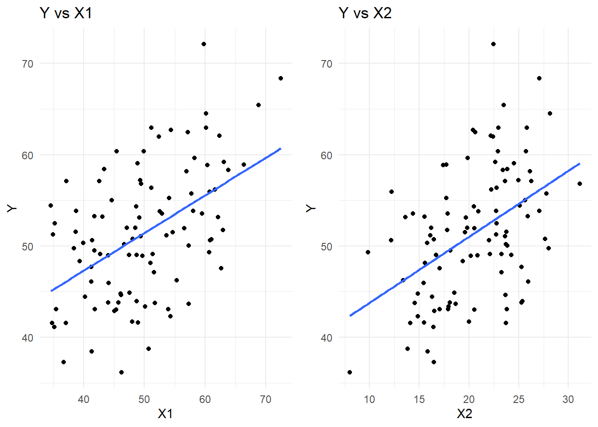
Przykład Regresji Wielorakiej
# Print model summarysummary(model_multiple)
Call:
lm(formula = Y ~ X1 + X2, data = data_multiple)
Residuals:
Min 1Q Median 3Q Max
-10.8598 -3.6005 0.1166 3.0892 14.6102
Coefficients:
Estimate Std. Error t value Pr(>|t|)
(Intercept) 11.77567 4.01351 2.934 0.00418 **
X1 0.45849 0.05992 7.651 1.47e-11 ***
X2 0.81639 0.11370 7.180 1.42e-10 ***
---
Signif. codes: 0 '***' 0.001 '**' 0.01 '*' 0.05 '.' 0.1 ' ' 1
Residual standard error: 5.122 on 97 degrees of freedom
Multiple R-squared: 0.5062, Adjusted R-squared: 0.4961
F-statistic: 49.72 on 2 and 97 DF, p-value: 1.367e-15
16.10.2 Interpretacja Współczynników
W regresji wielorakiej, każdy \hat{\beta}_k reprezentuje oczekiwaną zmianę w Y przy jednostkowym wzroście X_k, przy utrzymaniu wszystkich innych zmiennych na stałym poziomie.
# Create prediction grid for X1 (holding X2 at its mean)X1_grid <-seq(min(X1), max(X1), length.out =100)pred_data_X1 <-data.frame(X1 = X1_grid,X2 =mean(X2))pred_data_X1$Y_pred <-predict(model_multiple, newdata = pred_data_X1)# Create prediction grid for X2 (holding X1 at its mean)X2_grid <-seq(min(X2), max(X2), length.out =100)pred_data_X2 <-data.frame(X1 =mean(X1),X2 = X2_grid)pred_data_X2$Y_pred <-predict(model_multiple, newdata = pred_data_X2)# Plot partial effectsp3 <-ggplot() +geom_point(data = data_multiple, aes(x = X1, y = Y)) +geom_line(data = pred_data_X1, aes(x = X1, y = Y_pred), color ="red", size =1) +theme_minimal() +labs(title ="Efekt Cząstkowy X1",subtitle =paste("(X2 utrzymane na średniej =", round(mean(X2), 2), ")"))p4 <-ggplot() +geom_point(data = data_multiple, aes(x = X2, y = Y)) +geom_line(data = pred_data_X2, aes(x = X2, y = Y_pred), color ="red", size =1) +theme_minimal() +labs(title ="Efekt Cząstkowy X2",subtitle =paste("(X1 utrzymane na średniej =", round(mean(X1), 2), ")"))grid.arrange(p3, p4, ncol =2)
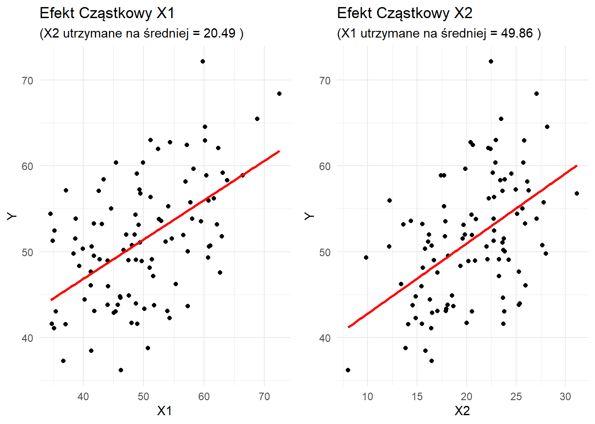
Efekty Cząstkowe w Regresji Wielorakiej
16.10.3 Współliniowość
Współliniowość występuje, gdy predyktory są silnie skorelowane. Zobaczmy jej efekty:
# Generate data with multicollinearityset.seed(106)X1_new <-rnorm(n, mean =50, sd =10)X2_new <-2*X1_new +rnorm(n, 0, 5) # X2 silnie skorelowane z X1Y_new <-10+0.5*X1_new +0.8*X2_new +rnorm(n, 0, 5)data_collinear <-data.frame(Y = Y_new, X1 = X1_new, X2 = X2_new)# Fit model with multicollinearitymodel_collinear <-lm(Y ~ X1 + X2, data = data_collinear)# Calculate VIFlibrary(car)vif_results <-vif(model_collinear)# Plot correlationggplot(data_collinear, aes(x = X1, y = X2)) +geom_point() +geom_smooth(method ="lm", se =FALSE, color ="red") +theme_minimal() +labs(title ="Korelacja między Predyktorami",subtitle =paste("Korelacja =", round(cor(X1_new, X2_new), 3)))
`geom_smooth()` using formula = 'y ~ x'
Efekty Współliniowości
16.11 Tematy Zaawansowane
16.11.1 Efekty Interakcji
Efekty interakcji pozwalają na to, by wpływ jednego predyktora zależał od innego:
Wooldridge, J.M. “Wprowadzenie do Ekonometrii: Współczesne Ujęcie”
Fox, J. “Analiza Regresji Stosowana i Uogólnione Modele Liniowe”
Angrist, J.D. i Pischke, J.S. “W Większości Nieszkodliwa Ekonometria”
Stock & Watson “Wprowadzenie do Ekonometrii”
Zrozumienie Regresji Metodą Najmniejszych Kwadratów (OLS): Podsumowanie dla Studentów
Analiza regresji to podstawowa metoda statystyczna, która bada i modeluje zależności między zmiennymi w celu zrozumienia, jak zmiany w jednej lub kilku zmiennych niezależnych wpływają na zmienną zależną.
W swojej istocie analiza regresji pomaga odpowiedzieć na pytania dotyczące przyczyny i skutku, przewidywania oraz prognozowania. Na przykład, przedsiębiorstwo może wykorzystać analizę regresji do zrozumienia, jak wydatki na reklamę wpływają na sprzedaż lub jak liczba godzin szkoleń pracowników przekłada się na produktywność.
16.14.2 Regresja jako Model Stochastyczny
W modelowaniu matematycznym spotykamy dwa podstawowe podejścia do opisywania relacji między zmiennymi:
modele deterministyczne,
modele stochastyczne.
16.14.2.1 Modele Deterministyczne a Stochastyczne
Model deterministyczny zakłada precyzyjną, ustaloną relację między danymi wejściowymi a wyjściowymi. W takich modelach, znając dane wejściowe, możemy z całkowitą pewnością obliczyć dokładny wynik. Weźmy pod uwagę klasyczne równanie fizyczne dotyczące drogi:
\text{Droga} = \text{Prędkość} × \text{Czas}
Przy określonych wartościach prędkości i czasu, równanie to zawsze da tę samą drogę. Nie ma tu miejsca na jakąkolwiek zmienność wyniku.
W przeciwieństwie do tego, analiza regresji uwzględnia naturalną zmienność danych. Podstawowa struktura modelu regresji to:
Y = f(X) + \epsilon
Gdzie:
Y reprezentuje wynik, który chcemy przewidzieć
f(X) reprezentuje systematyczną relację między naszymi predyktorami (X) a wynikiem
\epsilon reprezentuje losową zmienność naturalnie występującą w rzeczywistych danych
16.14.3 Czym jest Prosta Regresja Liniowa?
Rozważmy związek między czasem poświęconym na naukę (predyktor, zmienna niezależna) a wynikami egzaminów (zmienna objaśniana, outcome/response variable). Prosta regresja liniowa tworzy optymalną linię prostą przechodzącą przez punkty danych, modelującą tę relację. Linia ta służy dwóm celom: prognozowaniu oraz kwantyfikacji związku między zmiennymi.
Zależność matematyczna jest wyrażona jako:
Y_i = \beta_0 + \beta_1X_i + \epsilon_i
Używając naszego przykładu z czasem nauki do zilustrowania każdego składnika:
Y_i reprezentuje zmienną zależną (wyniki egzaminów)
X_i reprezentuje zmienną niezależną (godziny nauki)
\beta_0 reprezentuje wyraz wolny - oczekiwany wynik egzaminu przy zerowym czasie nauki
\beta_1 reprezentuje nachylenie - zmianę wyniku egzaminu na każdą dodatkową godzinę nauki
\epsilon_i reprezentuje składnik błędu, uwzględniający nieobserwowane czynniki
Naszym celem jest znalezienie oszacowań \hat{\beta}_0 i \hat{\beta}_1, które najlepiej przybliżają prawdziwe parametry \beta_0 i \beta_1. Dopasowana linia regresji jest wtedy wyrażona jako:
\hat{Y}_i = \hat{\beta}_0 + \hat{\beta}_1X_i
16.14.4 Metoda Najmniejszych Kwadratów (MNK/OLS)
Metoda “Najmniejszych Kwadratów” określa optymalne wartości dla \hat{\beta}_0 i \hat{\beta}_1 poprzez metodyczny proces. Choć współczesne oprogramowanie statystyczne wykonuje te obliczenia automatycznie, zrozumienie podstawowego procesu jest kluczowe:
Rozpocznij od wstępnego oszacowania linii regresji
Zazwyczaj zaczynamy od linii poziomej na poziomie \bar{Y} (średnia Y)
Służy to jako punkt odniesienia, reprezentujący brak związku między X a Y
Oblicz odległości pionowe (reszty) od każdego obserwowanego punktu do tej linii
Dodatnia reszta oznacza, że nasza linia niedoszacowuje prawdziwej wartości
Ujemna reszta oznacza, że nasza linia przeszacowuje prawdziwą wartość
Podnieś te odległości do kwadratu, aby:
Zapewnić, że dodatnie i ujemne odchylenia się nie znoszą
Przypisać większą wagę większym odchyleniom
Zsumuj wszystkie kwadraty odległości, aby otrzymać Sumę Kwadratów Błędów (SSE)
SSE = \sum(Y_i - \hat{Y}_i)^2
Reprezentuje to całkowite kwadratowe odchylenie obserwowanych wartości od naszych przewidywanych wartości
Systematycznie dostosowuj nachylenie i wyraz wolny linii, aby zminimalizować SSE:
Proces polega na stopniowym modyfikowaniu nachylenia i położenia linii, obserwując jak zmienia się suma kwadratów odchyłek (SSE) [formalnie wymaga to zastosowania pojęć z rachunku różniczkowego]
Gdy SSE przestaje się zmniejszać przy kolejnych niewielkich zmianach parametrów linii, oznacza to znalezienie optymalnego dopasowania
To miejsce odpowiada najmniejszej możliwej wartości SSE, czyli najlepszemu dopasowaniu linii do danych
Bardziej formalnie, MNK (Metoda Najmniejszych Kwadratów) znajduje optymalne wartości dla \beta_0 i \beta_1 poprzez minimalizację sumy kwadratów błędów:
Warto zauważyć, że w powyższych wzorach \hat{\beta}_1 reprezentuje nachylenie linii regresji i jest wyrażone jako stosunek kowariancji zmiennych X i Y do wariancji zmiennej X. Natomiast \hat{\beta}_0 to wyraz wolny (punkt przecięcia z osią Y), który możemy obliczyć używając średnich wartości zmiennych X i Y oraz już oszacowanego nachylenia. Symbol \bar{x} oznacza średnią wartość zmiennej X, a \bar{y} średnią wartość zmiennej Y.
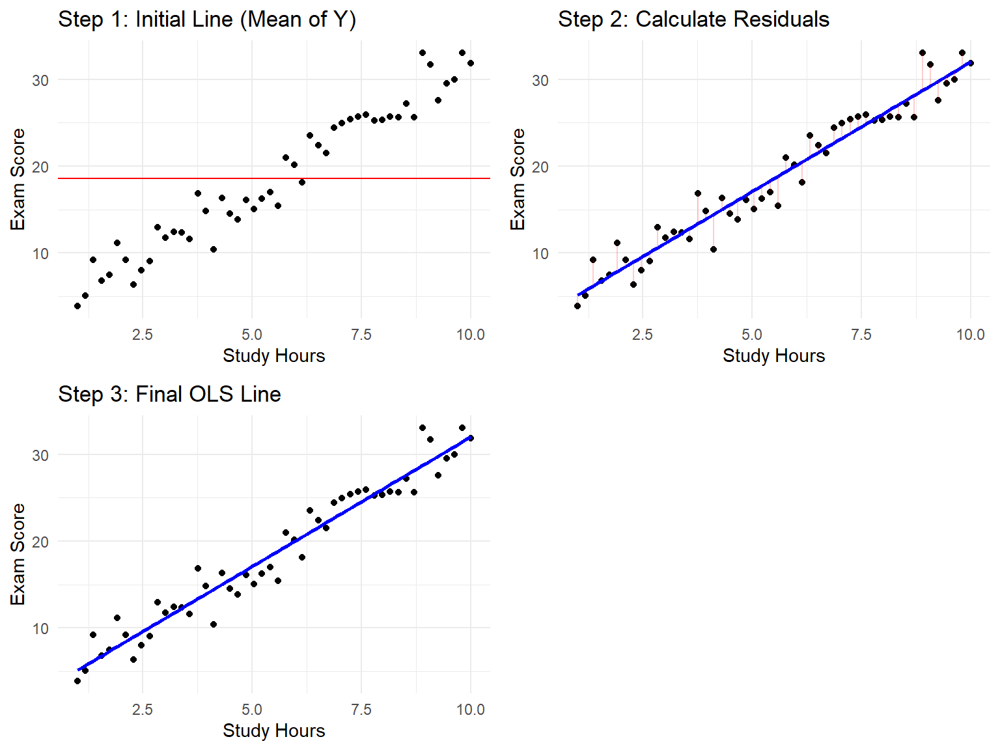
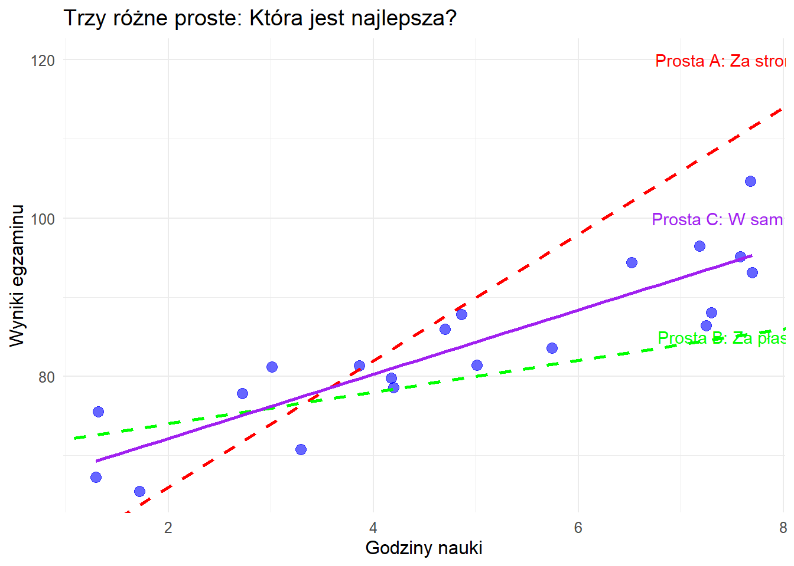
16.14.5 Estymacja Parametrów
Formuły do oszacowania parametrów wykorzystują podstawowe miary statystyczne:
Ta formuła zawiera dwa istotne pojęcia statystyczne:
Kowariancja (Cov) kwantyfikuje wspólny ruch X i Y
Wariancja (Var) mierzy rozproszenie wartości X wokół ich średniej
\bar{X} i \bar{Y} reprezentują odpowiednio średnie X i Y
Po obliczeniu \hat{\beta}_1 określamy \hat{\beta}_0:
\hat{\beta}_0 = \bar{Y} - \hat{\beta}_1\bar{X}
Zapewnia to, że linia regresji przechodzi przez punkt średnich (\bar{X}, \bar{Y}).
16.14.6 Dekompozycja Wariancji w Regresji
W analizie regresji rozkładamy wariancję w naszych danych na odrębne składniki, aby zrozumieć, jak dobrze nasz model wyjaśnia zmienną zależną. Przyjrzyjmy się każdemu składnikowi wariancji szczegółowo.
16.14.6.1 Przegląd Składników Wariancji
Całkowita Suma Kwadratów (SST, z ang. Total Sum of Squares) reprezentuje całkowitą zmienność obecną w naszej zmiennej zależnej. Regresyjna Suma Kwadratów (SSR, z ang. Regression Sum of Squares) obejmuje zmienność wyjaśnioną przez nasz model. Resztowa Suma Kwadratów (SSE, z ang. Error Sum of Squares) przedstawia pozostałą, niewyjaśnioną zmienność. Przeanalizujmy każdy z tych elementów.
16.14.6.2 Całkowita Suma Kwadratów (SST)
SST mierzy całkowitą zmienność w zmiennej zależnej, obliczając, jak bardzo każda obserwacja odbiega od średniej ogólnej:
SST = \sum(y_i - \bar{y})^2
W tym wzorze y_i reprezentuje każdą pojedynczą obserwację, a \bar{y} reprezentuje średnią wszystkich obserwacji. Kwadraty różnic ujmują całkowitą rozpiętość naszych danych wokół ich wartości średniej.
16.14.6.3 Regresyjna Suma Kwadratów (SSR)
SSR określa ilościowo zmienność, którą nasz model wyjaśnia poprzez zmienne objaśniające:
SSR = \sum(\hat{y}_i - \bar{y})^2
Tutaj \hat{y}_i reprezentuje wartości przewidywane przez nasz model. Ten wzór mierzy, jak daleko nasze przewidywania odbiegają od średniej, reprezentując zmienność uchwyconą przez nasz model.
16.14.6.4 Resztowa Suma Kwadratów (SSE)
SSE mierzy zmienność, która pozostaje niewyjaśniona przez nasz model:
SSE = \sum(y_i - \hat{y}_i)^2
Ten wzór oblicza różnice między wartościami rzeczywistymi (y_i) a wartościami przewidywanymi (\hat{y}_i), pokazując nam, ile zmienności nasz model nie zdołał wyjaśnić.
16.14.6.5 Podstawowa Zależność
Te trzy składniki są powiązane poprzez kluczowe równanie:
SST = SSR + SSE
To równanie pokazuje, że całkowita zmienność (SST) równa się sumie zmienności wyjaśnionej (SSR) i niewyjaśnionej (SSE). Ta zależność stanowi podstawę do pomiaru wydajności modelu.
16.14.6.6 Współczynnik Determinacji (R²)
Statystyka R², wyprowadzona z tych składników, mówi nam, jaką proporcję zmienności wyjaśnia nasz model:
R^2 = \frac{SSR}{SST} = 1 - \frac{SSE}{SST}
Gdy R² równa się 0,75, oznacza to, że nasz model wyjaśnia 75% zmienności w zmiennej zależnej. Pozostałe 25% reprezentuje zmienność niewyjaśnioną.
16.14.6.7 Istotne Aspekty
Zrozumienie tych składników pomaga nam:
Ocenić wydajność modelu poprzez proporcję wyjaśnionej zmienności
Zidentyfikować, ile zmienności pozostaje niewyjaśnione
Podejmować decyzje dotyczące ulepszania modelu
Porównywać moc wyjaśniającą różnych modeli
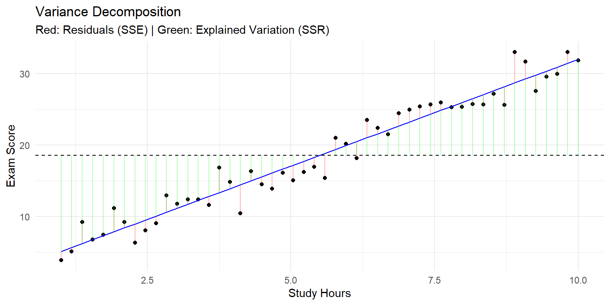
16.14.7 Współczynnik Determinacji (R^2)
R^2 służy jako miara dopasowania modelu, reprezentująca proporcję wariancji wyjaśnionej przez naszą regresję:
R^2 równe 0,75 wskazuje, że model wyjaśnia 75% wariancji (np. wyników egzaminów)
R^2 równe 0,20 sugeruje, że predyktory (np. godziny nauki) odpowiadają za 20% zmienności wyników
R^2 równe 1,00 reprezentuje doskonałą predykcję (rzadko obserwowane w praktyce)
R^2 równe 0,00 wskazuje na brak mocy wyjaśniającej
Uwaga: Niższa wartość R^2 niekoniecznie oznacza gorszy model - może po prostu odzwierciedlać złożoność badanej relacji.
16.14.8 Kluczowy Wniosek
Regresja liniowa ustala relacje między zmiennymi poprzez identyfikację optymalnego dopasowania liniowego przez punkty danych. Ta optymalizacja zachodzi poprzez minimalizację kwadratów reszt. Współczynnik determinacji (R^2) kwantyfikuje następnie moc wyjaśniającą modelu poprzez porównanie wyjaśnionej zmienności z całkowitą zmiennością w naszych danych.
16.15 Appendix A.1: Obliczanie Kowariancji, Korelacji Pearsona i Spearmana, oraz modelowanie OLS - przykład z obliczeniami
Studentka politologii bada związek między wielkością okręgu wyborczego (DM) a wskaźnikiem dysproporcjonalności Gallaghera (GH) w wyborach parlamentarnych w 10 losowo wybranych demokracjach.
Dane dotyczące wielkości okręgu wyborczego (\text{DM}) i indeksu Gallaghera:
\text{DM} (X)
Gallagher (Y)
2
18,2
3
16,7
4
15,8
5
15,3
6
15,0
7
14,8
8
14,7
9
14,6
10
14,55
11
14,52
16.15.1 Krok 1: Obliczanie Podstawowych Statystyk
Obliczanie średnich:
Dla \text{DM} (X): \bar{X} = \frac{\sum_{i=1}^n X_i}{n}
# Tworzenie wykresów dla każdego modelup1 <-ggplot(data, aes(x = DM, y = GH)) +geom_point() +geom_smooth(method ="lm", se =FALSE) +labs(title ="Model Liniowy") +theme_minimal()p2 <-ggplot(data, aes(x = DM, y = log_GH)) +geom_point() +geom_smooth(method ="lm", se =FALSE) +labs(title ="Model Log-liniowy") +theme_minimal()p3 <-ggplot(data, aes(x = log_DM, y = GH)) +geom_point() +geom_smooth(method ="lm", se =FALSE) +labs(title ="Model Liniowo-logarytmiczny") +theme_minimal()p4 <-ggplot(data, aes(x = log_DM, y = log_GH)) +geom_point() +geom_smooth(method ="lm", se =FALSE) +labs(title ="Model Log-log") +theme_minimal()# Układanie wykresów w siatkęlibrary(gridExtra)grid.arrange(p1, p2, p3, p4, ncol =2)
`geom_smooth()` using formula = 'y ~ x'
`geom_smooth()` using formula = 'y ~ x'
`geom_smooth()` using formula = 'y ~ x'
`geom_smooth()` using formula = 'y ~ x'
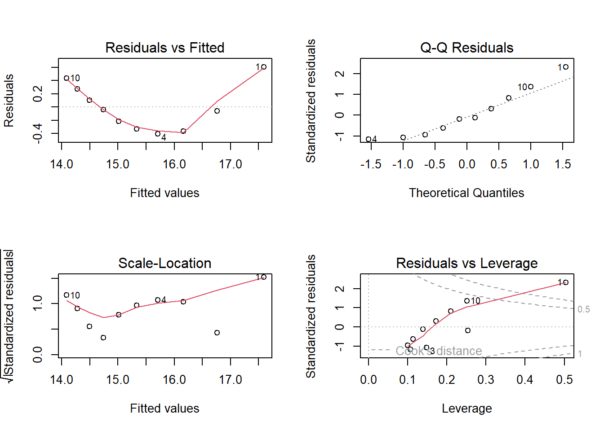
16.15.19 Krok 4: Analiza Reszt dla Najlepszego Modelu
Na podstawie wartości R-kwadrat, analiza reszt dla najlepiej dopasowanego modelu:
# Wykresy reszt dla najlepszego modelupar(mfrow =c(2, 2))plot(model_linearlog)
16.15.20 Krok 5: Interpretacja Najlepszego Modelu
Współczynniki modelu liniowo-logarytmicznego:
summary(model_linearlog)
Call:
lm(formula = GH ~ log_DM, data = data)
Residuals:
Min 1Q Median 3Q Max
-0.40702 -0.30207 -0.04907 0.22905 0.60549
Coefficients:
Estimate Std. Error t value Pr(>|t|)
(Intercept) 19.0223 0.4079 46.64 4.94e-11 ***
log_DM -2.0599 0.2232 -9.23 1.54e-05 ***
---
Signif. codes: 0 '***' 0.001 '**' 0.01 '*' 0.05 '.' 0.1 ' ' 1
Residual standard error: 0.3712 on 8 degrees of freedom
Multiple R-squared: 0.9142, Adjusted R-squared: 0.9034
F-statistic: 85.19 on 1 and 8 DF, p-value: 1.539e-05
Interpretacja:
\hat{\beta_0} reprezentuje oczekiwany Indeks Gallaghera, gdy ln(DM) = 0 (czyli gdy DM = 1)
\hat{\beta_1} reprezentuje zmianę Indeksu Gallaghera związaną z jednostkowym wzrostem ln(DM)
16.15.21 Krok 6: Predykcje Modelu
# Tworzenie wykresu predykcji dla najlepszego modeluggplot(data, aes(x = log_DM, y = GH)) +geom_point(color ="blue", size =3) +geom_smooth(method ="lm", se =TRUE, color ="red") +labs(title ="Model Liniowo-logarytmiczny: Indeks Gallaghera vs ln(Wielkość Okręgu)",x ="ln(Wielkość Okręgu)",y ="Indeks Gallaghera" ) +theme_minimal()
`geom_smooth()` using formula = 'y ~ x'
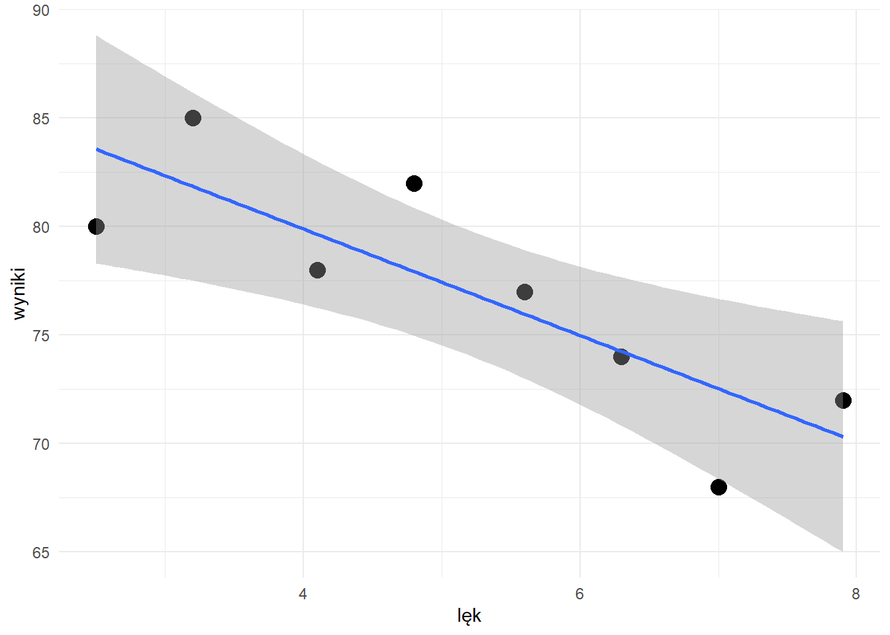
16.15.22 Krok 7: Analiza Elastyczności
Dla modelu log-log współczynniki bezpośrednio reprezentują elastyczności. Obliczenie średniej elastyczności dla modelu liniowo-logarytmicznego:
Wszystkie miary potwierdzają silną dodatnią zależność
Różnice między miarami wskazują na nieznaczne odchylenia od idealnej liniowości
Kendall daje najbardziej ostrożną ocenę siły związku
16.17 Appendix B. Prosty Model Regresji Liniowej (MNK/OLS) - podstawowe przykłady
16.18 Przykład 1. Związek Między Wielkością Okręgu a Dysproporcjonalnością Wyborczą (1)
Ta analiza bada związek między wielkością okręgu wyborczego (DM) a wskaźnikiem dysproporcjonalności Loosemore-Hanby (LH) w wyborach parlamentarnych w 6 krajach. Indeks Loosemore-Hanby mierzy dysproporcjonalność wyborczą, gdzie wyższe wartości wskazują na większą dysproporcjonalność między głosami a mandatami.
16.18.1 Dane
Wielkość Okręgu i Indeks LH według Kraju
Country
DM
LH
A
3
15.50
B
4
14.25
C
5
13.50
D
6
13.50
E
7
13.00
F
8
12.75
16.18.2 Krok 1: Obliczenie wariancji i odchylenia standardowego dla DM i LH
Ujemna kowariancja wskazuje na odwrotną zależność: gdy wielkość okręgu wzrasta, indeks dysproporcjonalności LH ma tendencję do spadku.
16.18.4 Krok 3: Obliczenie współczynnika korelacji liniowej Pearsona między DM i LH
Współczynnik korelacji Pearsona obliczany jest przy użyciu formuły:
r = \frac{Cov(DM, LH)}{\sigma_{DM} \cdot \sigma_{LH}}
Mamy już obliczone:
Cov(DM, LH) = -1.75
\sigma_{DM} = 1.871
\sigma_{LH} = 1
r = \frac{-1.75}{1.871 \cdot 1} = \frac{-1.75}{1.871} = -0.935
Współczynnik korelacji Pearsona: -0.935
16.18.4.1 Interpretacja:
Współczynnik korelacji -0.935 wskazuje:
Kierunek: Znak ujemny pokazuje odwrotną zależność między wielkością okręgu a indeksem LH.
Siła: Wartość bezwzględna 0.935 wskazuje na bardzo silną korelację (blisko -1).
Interpretacja praktyczna: Ponieważ wyższe wartości indeksu LH wskazują na większą dysproporcjonalność, ta silna ujemna korelacja sugeruje, że gdy wielkość okręgu wzrasta, dysproporcjonalność wyborcza ma tendencję do znacznego spadku. Innymi słowy, systemy wyborcze z większymi okręgami (więcej przedstawicieli wybieranych z jednego okręgu) zwykle dają bardziej proporcjonalne wyniki (niższa dysproporcjonalność).
Odkrycie to jest zgodne z teorią nauk politycznych, która sugeruje, że większe okręgi zapewniają więcej możliwości mniejszym partiom, aby uzyskać reprezentację, co prowadzi do wyników wyborczych, które lepiej odzwierciedlają rozkład głosów między partiami.
16.18.5 Krok 4: Skonstruowanie modelu regresji liniowej prostej i obliczenie R-kwadrat
Równanie regresji: Dla każdego wzrostu jednostkowego wielkości okręgu, indeks dysproporcjonalności LH jest oczekiwany spadek o 0.5 jednostki. Wyraz wolny (16.5) reprezentuje oczekiwany indeks LH, gdy wielkość okręgu wynosi zero (choć nie ma to praktycznego znaczenia, ponieważ wielkość okręgu nie może wynosić zero).
R-kwadrat: 0.875 wskazuje, że około 87.5% wariancji w dysproporcjonalności wyborczej (indeks LH) może być wyjaśnione przez wielkość okręgu. Jest to wysoka wartość, sugerująca, że wielkość okręgu jest rzeczywiście silnym predyktorem dysproporcjonalności wyborczej.
RMSE i MAE: Niskie wartości RMSE (0.323) i MAE (0.25) wskazują, że model dobrze dopasowuje się do danych, z małymi błędami predykcji.
Implikacje polityczne: Odkrycia sugerują, że zwiększanie wielkości okręgu mogłoby być skuteczną strategią reformy wyborczej dla krajów dążących do zmniejszenia dysproporcjonalności między głosami a mandatami. Jednak korzyści marginalne wydają się zmniejszać wraz ze wzrostem wielkości okręgu, jak widać w wzorcu danych.
16.19 Example 2. Descriptive Statistics and OLS Example - Income and Voter Turnout
Background
In preparation for the 2024 municipal elections, the Amsterdam Electoral Commission conducted research on voter participation patterns across different city neighborhoods. A key question emerged:
Does economic prosperity of a neighborhood correlate with civic engagement, specifically voter turnout?
Data Collection
Sample: 5 representative neighborhoods in Amsterdam
Time Period: Data from the 2022 municipal elections
Variables:
Income: Average annual household income per capita (thousands €)
Turnout: Percentage of registered voters who voted in the election
# Verificationsummary(model)$r.squared # Should match our calculation
[1] 0.9885135
16.19.6 Visualization
library(ggplot2)df <-data.frame(income = income, turnout = turnout)ggplot(df, aes(x = income, y = turnout)) +geom_point(color ="blue", size =3) +geom_smooth(method ="lm", se =FALSE, color ="red") +labs(title ="Voter Turnout vs Income per Capita",x ="Income per Capita (thousands €)",y ="Voter Turnout (%)" ) +theme_minimal() +theme(plot.title =element_text(hjust =0.5),text =element_text(size =12) )
16.19.7 Interpretation
The analysis shows:
A very strong positive correlation (r = 0.994) between income and voter turnout
The regression equation \hat{Y} = -0.9085714 + 1.2571429X indicates that:
For each €1,000 increase in income, turnout increases by about 1.26 percentage points
The intercept (-0.9086) has little practical meaning as income is never zero
The R-squared of 0.9916 indicates that 99.16% of the variance in turnout is explained by income
16.20 Example 3. Anxiety Levels and Cognitive Performance: A Laboratory Study
16.20.1 Data and Context
In a psychology experiment, researchers measured the relationship between anxiety levels (measured by galvanic skin response, GSR) and cognitive performance (score on a working memory task).
library(ggplot2)ggplot(data.frame(anxiety, performance), aes(x = anxiety, y = performance)) +geom_point(color ="blue", size =3) +geom_smooth(method ="lm", se =FALSE, color ="red") +labs(title ="Cognitive Performance vs. Anxiety Levels",x ="Anxiety (GSR)",y ="Performance Score" ) +theme_minimal()
16.20.7 Interpretation
Strong negative correlation (r = -0.993) between anxiety and cognitive performance
For each unit increase in GSR (anxiety), performance decreases by approximately 5.44 points
The model explains 99.26% of the variance in performance scores
The relationship appears to be strongly linear, suggesting a reliable anxiety-performance relationship
The high intercept (105.32) represents the theoretical maximum performance at zero anxiety
16.20.8 Study Limitations
Small sample size (n=8)
Possible other confounding variables
Limited range of anxiety levels
Cross-sectional rather than longitudinal data
16.21 Przykład 4. Analiza związku między wielkością okręgu a wskaźnikiem dysproporcjonalności wyborczej (2)
Ta analiza bada związek między wielkością okręgu (DM) a wskaźnikiem dysproporcjonalności Loosemore-Hanby (LH) w wyborach parlamentarnych w 6 krajach. Wskaźnik Loosemore-Hanby mierzy dysproporcjonalność wyborczą, przy czym wyższe wartości wskazują na większą dysproporcjonalność między głosami a mandatami.
16.21.1 Dane
Wielkość okręgu i wskaźnik LH według kraju
Kraj
DM
LH
A
4
12
B
10
8
C
3
15
D
8
10
E
7
6
F
4
13
16.21.2 Krok 1: Obliczenie wariancji i odchylenia standardowego dla DM i LH
Ujemna kowariancja wskazuje na odwrotną zależność: wraz ze wzrostem wielkości okręgu wskaźnik dysproporcjonalności LH ma tendencję do spadku.
16.21.4 Krok 3: Obliczenie współczynnika korelacji liniowej Pearsona między DM a LH
Współczynnik korelacji Pearsona oblicza się przy użyciu wzoru:
r = \frac{Cov(DM, LH)}{s_{DM} \cdot s_{LH}}
Mamy już obliczone:
Cov(DM, LH) = -7.4
s_{DM} = 2.757
s_{LH} = 3.327
r = \frac{-7.4}{2.757 \cdot 3.327} = \frac{-7.4}{9.172} = -0.807
Współczynnik korelacji Pearsona: -0.807
16.21.4.1 Interpretacja:
Współczynnik korelacji -0.807 wskazuje:
Kierunek: Ujemny znak pokazuje odwrotną zależność między wielkością okręgu a wskaźnikiem LH.
Siła: Wartość bezwzględna 0.807 wskazuje na silną korelację (blisko -1).
Interpretacja praktyczna: Ponieważ wyższe wartości wskaźnika LH wskazują na większą dysproporcjonalność, ta silna ujemna korelacja sugeruje, że wraz ze wzrostem wielkości okręgu, dysproporcjonalność wyborcza ma tendencję do znacznego spadku. Innymi słowy, systemy wyborcze z większymi okręgami wyborczymi (więcej przedstawicieli wybieranych w okręgu) mają tendencję do generowania bardziej proporcjonalnych wyników (mniejsza dysproporcjonalność).
Ustalenie to jest zgodne z teorią nauk politycznych, która sugeruje, że większe okręgi wyborcze zapewniają mniejszym partiom więcej możliwości uzyskania reprezentacji, co prowadzi do wyników wyborczych, które lepiej odzwierciedlają rozkład głosów między partiami.
16.21.5 Krok 4: Skonstruowanie prostego modelu regresji liniowej i obliczenie R-kwadrat
Korekta Bessela (dzielenie przez n-1 zamiast n) stosuje się do estymacji wariancji próby, ale nie jest standardowo stosowana przy obliczaniu RMSE, gdyż RMSE jest miarą błędu predykcji, a nie estymatorem parametru populacji.
16.21.5.3 Obliczanie MAE (Średni błąd bezwzględny)
MAE oblicza się przy użyciu wzoru:
MAE = \frac{1}{n}\sum_{i=1}^{n}|y_i - \hat{y}_i|
Kraj
LH (y_i)
Przewidywane LH (\hat{y}_i)
|y_i - \hat{y}_i|
A
12
12.615
|12 - 12.615| = 0.615
B
8
6.771
|8 - 6.771| = 1.229
C
15
13.589
|15 - 13.589| = 1.411
D
10
8.719
|10 - 8.719| = 1.281
E
6
9.693
|6 - 9.693| = 3.693
F
13
12.615
|13 - 12.615| = 0.385
Suma
8.614
MAE = \frac{8.614}{6} = 1.436
Model regresji: LH = 16.511 - 0.974 \cdot DM
R-kwadrat: 0.651
RMSE: 1.794
MAE: 1.436
16.21.5.4 Interpretacja:
Równanie regresji: Dla każdego jednostkowego wzrostu wielkości okręgu, wskaźnik dysproporcjonalności LH zmniejsza się o 0.974 jednostki. Wyraz wolny (16.511) reprezentuje oczekiwany wskaźnik LH, gdy wielkość okręgu wynosi zero (choć nie ma to praktycznego znaczenia, ponieważ wielkość okręgu nie może wynosić zero).
R-kwadrat: 0.651 wskazuje, że około 65.1% wariancji dysproporcjonalności wyborczej (wskaźnik LH) może być wyjaśnione przez wielkość okręgu. Jest to dość wysoka wartość, sugerująca, że wielkość okręgu jest rzeczywiście silnym predyktorem dysproporcjonalności wyborczej, choć mniejszym niż w poprzednim zestawie danych.
RMSE: Wartość 1.794 informuje nas o przeciętnym błędzie prognozy modelu. Jest to miara dokładności przewidywań modelu wyrażona w jednostkach zmiennej zależnej (LH).
MAE: Wartość 1.436 informuje nas o przeciętnym bezwzględnym błędzie prognozy modelu. W porównaniu z RMSE, MAE jest mniej czuły na wartości odstające, co potwierdza, że niektóre obserwacje (np. dla kraju E) mają stosunkowo duży błąd predykcji.
Implikacje polityczne: Wyniki sugerują, że zwiększenie wielkości okręgu mogłoby być skuteczną strategią reform wyborczych dla krajów starających się zmniejszyć dysproporcjonalność między głosami a mandatami. Jednakże, korzyści marginalne wydają się zmniejszać wraz ze wzrostem wielkości okręgu, jak widać we wzorcu danych.
16.22 Example 5. District Magnitude and Electoral Disproportionality: A Comparative Analysis (*)